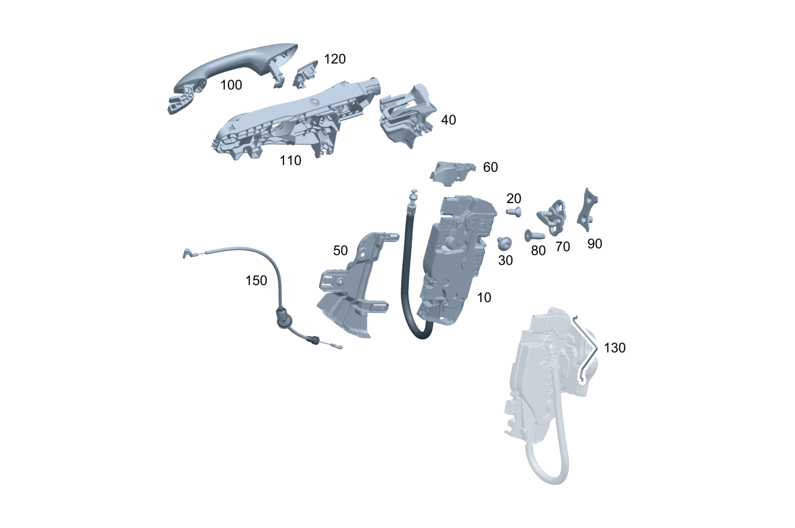

| № | Артикул | Название | Кол. | Примечание | Ограничение |
|---|---|---|---|---|---|
| 10 | A 099 720 49 02 | Замок двери (DOOR LOCK) | 1 | Слева [429] ДЕТАЛЬ, СВЯЗАННАЯ С ПРОТИВОУГОННОЙ БЕЗОПАСНОСТЬЮ | |
| 10 | A 099 720 23 03 | Замок двери (DOOR LOCK) | 1 | Слева | |
| 10 | A 099 720 60 02 | Замок двери (DOOR LOCK) | 1 | Слева [429] ДЕТАЛЬ, СВЯЗАННАЯ С ПРОТИВОУГОННОЙ БЕЗОПАСНОСТЬЮ | 165 |
| 10 | A 099 720 29 02 | Замок двери (DOOR LOCK) | 1 | Слева Рулевое управление: Вправо [429] ДЕТАЛЬ, СВЯЗАННАЯ С ПРОТИВОУГОННОЙ БЕЗОПАСНОСТЬЮ | 885 |
| 10 | A 099 720 25 03 | Замок двери (DOOR LOCK) | 1 | Слева Рулевое управление: Вправо | 885 |
| 10 | A 099 720 61 02 | Замок двери (DOOR LOCK) | 1 | Слева Рулевое управление: Вправо [429] ДЕТАЛЬ, СВЯЗАННАЯ С ПРОТИВОУГОННОЙ БЕЗОПАСНОСТЬЮ | 885+165 |
| 10 | A 099 720 20 02 | Замок двери (DOOR LOCK) | 1 | Справа [429] ДЕТАЛЬ, СВЯЗАННАЯ С ПРОТИВОУГОННОЙ БЕЗОПАСНОСТЬЮ | |
| 10 | A 099 720 12 03 | Замок двери (DOOR LOCK) | 1 | Справа [429] ДЕТАЛЬ, СВЯЗАННАЯ С ПРОТИВОУГОННОЙ БЕЗОПАСНОСТЬЮ | |
| 10 | A 099 720 34 02 | Замок двери (DOOR LOCK) | 1 | Справа | 165 |
| 10 | A 099 720 30 02 | Замок двери (DOOR LOCK) | 1 | Справа Рулевое управление: Вправо [429] ДЕТАЛЬ, СВЯЗАННАЯ С ПРОТИВОУГОННОЙ БЕЗОПАСНОСТЬЮ | 885 |
| 10 | A 099 720 26 03 | Замок двери (DOOR LOCK) | 1 | Справа Рулевое управление: Вправо | 885 |
| 10 | A 099 720 62 02 | Замок двери (DOOR LOCK) | 1 | Справа Рулевое управление: Вправо [429] ДЕТАЛЬ, СВЯЗАННАЯ С ПРОТИВОУГОННОЙ БЕЗОПАСНОСТЬЮ | 885+165 |
| 20 | A 001 990 10 02 | Винт Torx потайной (COUNTERSUNK SCREW) | 2 | Крепление замка (левая сторона); M6X14 | |
| 20 | A 000 990 89 35 | Винт Torx полупотай (CSK. PAN HEAD SCREW) | 2 | Крепление замка (левая сторона); M6X15,7 | |
| 20 | A 001 990 10 02 | Винт Torx потайной (COUNTERSUNK SCREW) | 2 | Крепление замка (правая сторона); M6X14 | |
| 20 | A 000 990 89 35 | Винт Torx полупотай (CSK. PAN HEAD SCREW) | 2 | Крепление замка (правая сторона); M6X15,7 | |
| 30 | A 010 990 22 04 | Винт с внутр. звездочкой (FLAT HEAD SCREW) | 1 | Крепление замка (левая сторона); M6X10 | |
| 30 | A 010 990 22 04 | Винт с внутр. звездочкой (FLAT HEAD SCREW) | 1 | Крепление замка (правая сторона); M6X10 | |
| 40 | A 206 723 01 00 | Держатель (HOLDER) | 1 | Опорная дуга, слева | |
| 40 | A 206 723 02 00 | Держатель (HOLDER) | 1 | Опорная дуга, справа | |
| 50 | A 206 723 03 00 | Держатель (HOLDER) | 1 | Замок двери слева | |
| 50 | A 206 723 04 00 | Держатель (HOLDER) | 1 | Замок двери справа | |
| 60 | A 206 723 19 00 | Накладка замка двери (COVER, DOOR LOCK) | 1 | Слева | 889 |
| 60 | A 206 723 19 00 | Накладка замка двери (COVER, DOOR LOCK) | 1 | Слева | 885 |
| 60 | A 206 723 19 00 | Накладка замка двери (COVER, DOOR LOCK) | 1 | Слева Рулевое управление: Влево | 896 |
| 60 | A 206 723 19 00 | Накладка замка двери (COVER, DOOR LOCK) | 1 | Слева | 889+896 |
| 60 | A 206 723 19 00 | Накладка замка двери (COVER, DOOR LOCK) | 1 | Слева | 885+896 |
| 60 | A 206 723 19 00 | Накладка замка двери (COVER, DOOR LOCK) | 1 | Слева | 885+889+896 |
| 60 | A 206 723 19 00 | Накладка замка двери (COVER, DOOR LOCK) | 1 | Слева | 885+889 |
| 60 | A 206 723 20 00 | Накладка замка двери (COVER, DOOR LOCK) | 1 | Справа | 889 |
| 60 | A 206 723 20 00 | Накладка замка двери (COVER, DOOR LOCK) | 1 | Справа | 885 |
| 60 | A 206 723 20 00 | Накладка замка двери (COVER, DOOR LOCK) | 1 | Справа Рулевое управление: Вправо | 896 |
| 60 | A 206 723 20 00 | Накладка замка двери (COVER, DOOR LOCK) | 1 | Справа | 889+896 |
| 60 | A 206 723 20 00 | Накладка замка двери (COVER, DOOR LOCK) | 1 | Справа | 885+896 |
| 60 | A 206 723 20 00 | Накладка замка двери (COVER, DOOR LOCK) | 1 | Справа | 885+889+896 |
| 60 | A 206 723 20 00 | Накладка замка двери (COVER, DOOR LOCK) | 1 | Справа | 885+889 |
| 70 | A 099 723 08 00 | Скоба замка (LOCK STRIKER) | 1 | Замок двери слева | |
| 70 | A 099 723 21 00 | Скоба замка (LOCK STRIKER) | 1 | Замок двери слева | |
| 70 | A 099 723 08 00 | Скоба замка (LOCK STRIKER) | 1 | Замок двери справа | |
| 70 | A 099 723 21 00 | Скоба замка (LOCK STRIKER) | 1 | Замок двери справа | |
| 80 | A 001 990 11 02 | Винт Torx потайной (COUNTERSUNK SCREW) | 2 | Крепление проушины (левая сторона); M8X20 | |
| 80 | A 001 990 11 02 | Винт Torx потайной (COUNTERSUNK SCREW) | 2 | Крепление проушины (левая сторона); M8X20 | 165 |
| 80 | A 001 990 11 02 | Винт Torx потайной (COUNTERSUNK SCREW) | 2 | Крепление проушины (левая сторона); M8X20 | 165 |
| 80 | A 000 990 97 48 | Винт Torx потайной (COUNTERSUNK SCREW) | 2 | Крепление проушины (левая сторона) | 165 |
| 80 | A 001 990 23 02 | Винт Torx потайной (COUNTERSUNK SCREW) | 2 | Крепление проушины (левая сторона); M8X25 | 0B4 |
| 80 | A 000 990 97 48 | Винт Torx потайной (COUNTERSUNK SCREW) | 2 | Крепление проушины (левая сторона) | 0B4 |
| 80 | A 001 990 11 02 | Винт Torx потайной (COUNTERSUNK SCREW) | 2 | Крепление проушины (правая сторона); M8X20 | |
| 80 | A 001 990 11 02 | Винт Torx потайной (COUNTERSUNK SCREW) | 2 | Крепление проушины (правая сторона); M8X20 | 165 |
| 80 | A 001 990 11 02 | Винт Torx потайной (COUNTERSUNK SCREW) | 2 | Крепление проушины (правая сторона); M8X20 | 165 |
| 80 | A 000 990 97 48 | Винт Torx потайной (COUNTERSUNK SCREW) | 2 | Крепление проушины (правая сторона) | 165 |
| 80 | A 001 990 23 02 | Винт Torx потайной (COUNTERSUNK SCREW) | 2 | Крепление проушины (правая сторона); M8X25 | 0B4 |
| 80 | A 000 990 97 48 | Винт Torx потайной (COUNTERSUNK SCREW) | 2 | Крепление проушины (правая сторона) | 0B4 |
| 90 | A 099 723 10 00 | Пластина с резьбой (THREADED PLATE) | 1 | Крепление проушины (левая сторона) | |
| 90 | A 099 723 10 00 | Пластина с резьбой (THREADED PLATE) | 1 | Крепление проушины (правая сторона) | |
| 100 | A 099 760 56 02 | Ручка двери (DOOR HANDLE) | 1 | Слева | |
| 100 | A 099 760 60 02 | Ручка двери (DOOR HANDLE) | 1 | Слева | 889 |
| 100 | A 099 760 62 02 | Ручка двери (DOOR HANDLE) | 1 | Слева Рулевое управление: Влево | (889+896)+(805/806) |
| 100 | A 099 760 62 02 | Ручка двери (DOOR HANDLE) | 1 | Слева Рулевое управление: Влево | (889+896) |
| 100 | A 099 760 31 09 | Ручка двери | 1 | Слева Рулевое управление: Влево | 889+896+(807/808/29X)+(P55/P60) |
| 100 | A 099 760 60 02 | Ручка двери (DOOR HANDLE) | 1 | Слева Рулевое управление: Вправо | (889+896)+(805/806) |
| 100 | A 099 760 60 02 | Ручка двери (DOOR HANDLE) | 1 | Слева Рулевое управление: Вправо | (889+896) |
| 100 | A 099 760 33 09 | Ручка двери | 1 | Слева Рулевое управление: Вправо | 889+896+(807/808/29X)+(P55/P60) |
| 100 | A 099 760 60 02 | Ручка двери (DOOR HANDLE) | 1 | Слева Рулевое управление: Вправо | (889+885+896)+805 |
| 100 | A 099 760 60 02 | Ручка двери (DOOR HANDLE) | 1 | Слева Рулевое управление: Вправо | (889+885+896) |
| 100 | A 099 760 33 09 | Ручка двери | 1 | Слева Рулевое управление: Вправо | 889+885+896+(807/808/29X)+(P55/P60) |
| 100 | A 099 760 33 09 | Ручка двери | 1 | Слева | 889+(P55/P60) |
| 100 | A 099 760 58 02 | Ручка двери (DOOR HANDLE) | 1 | Слева Рулевое управление: Вправо | 896 |
| 100 | A 099 760 62 02 | Ручка двери (DOOR HANDLE) | 1 | Слева Рулевое управление: Влево | 889+896 |
| 100 | A 099 760 60 02 | Ручка двери (DOOR HANDLE) | 1 | Слева Рулевое управление: Вправо | 889+896 |
| 100 | A 099 760 57 02 | Ручка двери (DOOR HANDLE) | 1 | Справа | |
| 100 | A 099 760 61 02 | Ручка двери (DOOR HANDLE) | 1 | Справа | 889 |
| 100 | A 099 760 59 02 | Ручка двери (DOOR HANDLE) | 1 | Справа Рулевое управление: Влево | 896 |
| 100 | A 099 760 63 02 | Ручка двери (DOOR HANDLE) | 1 | Справа Рулевое управление: Вправо | (889+896)+(805/806) |
| 100 | A 099 760 63 02 | Ручка двери (DOOR HANDLE) | 1 | Справа Рулевое управление: Вправо | (889+896) |
| 100 | A 099 760 32 09 | Ручка двери | 1 | Справа Рулевое управление: Вправо | 889+896+(807/808/29X)+(P55/P60) |
| 100 | A 099 760 63 02 | Ручка двери (DOOR HANDLE) | 1 | Справа Рулевое управление: Вправо | (889+885+896)+805 |
| 100 | A 099 760 63 02 | Ручка двери (DOOR HANDLE) | 1 | Справа Рулевое управление: Вправо | (889+885+896) |
| 100 | A 099 760 32 09 | Ручка двери | 1 | Справа Рулевое управление: Вправо | 889+885+896+(807/808/29X)+(P55/P60) |
| 100 | A 099 760 61 02 | Ручка двери (DOOR HANDLE) | 1 | Справа Рулевое управление: Влево | (889+896)+(805/806) |
| 100 | A 099 760 61 02 | Ручка двери (DOOR HANDLE) | 1 | Справа Рулевое управление: Влево | (889+896) |
| 100 | A 099 760 34 09 | Ручка двери | 1 | Справа Рулевое управление: Влево | 889+896+(807/808/29X)+(P55/P60) |
| 100 | A 099 760 34 09 | Ручка двери | 1 | Справа | 889+(P55/P60) |
| 100 | A 099 760 61 02 | Ручка двери (DOOR HANDLE) | 1 | Справа Рулевое управление: Влево | 896+889 |
| 100 | A 099 760 63 02 | Ручка двери (DOOR HANDLE) | 1 | Справа Рулевое управление: Вправо | 896+889 |
| 110 | A 099 760 50 02 | Основание ручки двери (BEARING BRACKET) | 1 | Слева | |
| 110 | A 099 760 55 02 | Основание ручки двери (BEARING BRACKET) | 1 | Слева | 889 |
| 110 | A 099 760 50 02 | Основание ручки двери (BEARING BRACKET) | 1 | Слева Рулевое управление: Вправо | 896 |
| 110 | A 099 760 74 03 | Основание ручки двери (BEARING BRACKET) | 1 | Слева Рулевое управление: Вправо | 885 |
| 110 | A 099 760 99 03 | Основание ручки двери (BEARING BRACKET) | 1 | Слева Рулевое управление: Вправо | 885+889 |
| 110 | A 099 760 52 02 | Основание ручки двери (BEARING BRACKET) | 1 | Справа | |
| 110 | A 099 760 54 02 | Основание ручки двери (BEARING BRACKET) | 1 | Справа | 889 |
| 110 | A 099 760 54 02 | Основание ручки двери (BEARING BRACKET) | 1 | Справа Рулевое управление: Вправо | 896 |
| 110 | A 099 760 52 02 | Основание ручки двери (BEARING BRACKET) | 1 | Справа Рулевое управление: Влево | 896 |
| 120 | A 099 760 65 02 | Накладка ручки двери (COVER, DOOR HANDLE) | 1 | Слева | |
| 120 | A 099 760 68 02 | Накладка ручки двери (COVER, DOOR HANDLE) | 1 | Слева | 889 |
| 120 | A 099 760 68 02 | Накладка ручки двери (COVER, DOOR HANDLE) | 1 | Слева Рулевое управление: Влево | 896 |
| 120 | A 099 760 65 02 | Накладка ручки двери (COVER, DOOR HANDLE) | 1 | Слева Рулевое управление: Вправо | 896 |
| 120 | A 099 760 00 04 | Накладка ручки двери (COVER, DOOR HANDLE) | 1 | Слева Рулевое управление: Вправо | 885 |
| 120 | A 099 760 01 04 | Накладка ручки двери (COVER, DOOR HANDLE) | 1 | Слева Рулевое управление: Вправо | 885+889 |
| 120 | A 099 760 67 02 | Накладка ручки двери (COVER, DOOR HANDLE) | 1 | Справа | |
| 120 | A 099 760 70 02 | Накладка ручки двери (COVER, DOOR HANDLE) | 1 | Справа | 889 |
| 120 | A 099 760 67 02 | Накладка ручки двери (COVER, DOOR HANDLE) | 1 | Справа Рулевое управление: Влево | 896 |
| 120 | A 099 760 70 02 | Накладка ручки двери (COVER, DOOR HANDLE) | 1 | Справа Рулевое управление: Вправо | 896 |
| 130 | A 206 722 45 00 | Соединительная тяга (LINK ROD) | 1 | Ручка двери | |
| 150 | A 206 760 00 00 | Трос (PULLEY) | 1 | Проем двери слева | |
| 150 | A 206 760 00 00 | Трос (PULLEY) | 1 | Проем двери справа | |
| 450 | A 099 760 71 02 | Комплект цилиндра замка (LOCKING SET) | 1 | [429] ДЕТАЛЬ, СВЯЗАННАЯ С ПРОТИВОУГОННОЙ БЕЗОПАСНОСТЬЮ | |
| 450 | A 099 760 53 04 | Комплект цилиндра замка (LOCKING SET) | 1 | Рулевое управление: Влево [429] ДЕТАЛЬ, СВЯЗАННАЯ С ПРОТИВОУГОННОЙ БЕЗОПАСНОСТЬЮ | P75 |
| 460 | A 099 760 64 02 | - Направляющая замк. цил. (LOCK CYLINDER GUIDE) | 1 | Дверь водителя [429] ДЕТАЛЬ, СВЯЗАННАЯ С ПРОТИВОУГОННОЙ БЕЗОПАСНОСТЬЮ | |
| 470 | A 099 766 26 00 | - Механический ключ (KEY, MECHANICAL) | 2 | Механический привод для аварийного случая [429] ДЕТАЛЬ, СВЯЗАННАЯ С ПРОТИВОУГОННОЙ БЕЗОПАСНОСТЬЮ | |
| 480 | A 203 680 03 84 | - Замковый цилиндр (LOCK CYLINDER) | 1 | Короб перчаточного ящика [429] ДЕТАЛЬ, СВЯЗАННАЯ С ПРОТИВОУГОННОЙ БЕЗОПАСНОСТЬЮ | P14/P29/PTF/P86 |
| 480 | A 203 680 03 84 | - Замковый цилиндр (LOCK CYLINDER) | 1 | Короб перчаточного ящика [429] ДЕТАЛЬ, СВЯЗАННАЯ С ПРОТИВОУГОННОЙ БЕЗОПАСНОСТЬЮ | P14/P29/950/PTF/P86 |
| 500 | A 206 905 76 03 | Ключ (KEY) | 2 | Электронный, незапрограммированный ES2: 9999 [429] ДЕТАЛЬ, СВЯЗАННАЯ С ПРОТИВОУГОННОЙ БЕЗОПАСНОСТЬЮ [-] При заказе обязательно полностью заполнить и архивировать формуляр. "Заказ заменяющего ключа / деталей системы замков": в случае возможного уголовного расследования должна быть возможность в любой момент предоставить подтверждение. [-] На а/м с FBS4 для программирования дополнительного или заменяющего ключа FBS4 использовать XENTRY Diagnostics, выбрав "Дополнительный ключ запрограммировать и инициализировать" или "Заменяющий ключ запрограммировать и инициализировать" | |
| 500 | A 206 905 19 04 | Ключ (KEY) | 2 | Электронный, незапрограммированный ES2: 9999 [429] ДЕТАЛЬ, СВЯЗАННАЯ С ПРОТИВОУГОННОЙ БЕЗОПАСНОСТЬЮ [-] При заказе обязательно полностью заполнить и архивировать формуляр. "Заказ заменяющего ключа / деталей системы замков": в случае возможного уголовного расследования должна быть возможность в любой момент предоставить подтверждение. [-] На а/м с FBS4 для программирования дополнительного или заменяющего ключа FBS4 использовать XENTRY Diagnostics, выбрав "Дополнительный ключ запрограммировать и инициализировать" или "Заменяющий ключ запрограммировать и инициализировать" | P76 |
| 500 | A 206 905 76 03 | Ключ (KEY) | 2 | Электронный, запрограммированный [429] ДЕТАЛЬ, СВЯЗАННАЯ С ПРОТИВОУГОННОЙ БЕЗОПАСНОСТЬЮ [-] При заказе обязательно полностью заполнить и архивировать формуляр. "Заказ заменяющего ключа / деталей системы замков": в случае возможного уголовного расследования должна быть возможность в любой момент предоставить подтверждение. [-] На а/м с FBS4 перед заказом обязательно с помощью XENTRY Diagnostics выполнить следующую команду: "Зарегистрировать а/м для заказа запрограммированного ключа" [-] Внимание ! При заказе замещающего ключа необходимо указать ES-2. Считать данные из автомобиля | |
| 500 | A 206 905 19 04 | Ключ (KEY) | 2 | Электронный, запрограммированный [429] ДЕТАЛЬ, СВЯЗАННАЯ С ПРОТИВОУГОННОЙ БЕЗОПАСНОСТЬЮ [-] При заказе обязательно полностью заполнить и архивировать формуляр. "Заказ заменяющего ключа / деталей системы замков": в случае возможного уголовного расследования должна быть возможность в любой момент предоставить подтверждение. [-] На а/м с FBS4 перед заказом обязательно с помощью XENTRY Diagnostics выполнить следующую команду: "Зарегистрировать а/м для заказа запрограммированного ключа" [-] Внимание ! При заказе замещающего ключа необходимо указать ES-2. Считать данные из автомобиля | P76 |
| 500 | A 206 905 85 03 | Ключ (KEY) | 2 | Электронный, незапрограммированный ES2: 9999 [429] ДЕТАЛЬ, СВЯЗАННАЯ С ПРОТИВОУГОННОЙ БЕЗОПАСНОСТЬЮ [-] При заказе обязательно полностью заполнить и архивировать формуляр. "Заказ заменяющего ключа / деталей системы замков": в случае возможного уголовного расследования должна быть возможность в любой момент предоставить подтверждение. [-] На а/м с FBS4 для программирования дополнительного или заменяющего ключа FBS4 использовать XENTRY Diagnostics, выбрав "Дополнительный ключ запрограммировать и инициализировать" или "Заменяющий ключ запрограммировать и инициализировать" | 783/783+889 |
| 500 | A 223 905 72 09 | Ключ (KEY) | 2 | Электронный, незапрограммированный ES2: 9999 [429] ДЕТАЛЬ, СВЯЗАННАЯ С ПРОТИВОУГОННОЙ БЕЗОПАСНОСТЬЮ [-] При заказе обязательно полностью заполнить и архивировать формуляр. "Заказ заменяющего ключа / деталей системы замков": в случае возможного уголовного расследования должна быть возможность в любой момент предоставить подтверждение. [-] На а/м с FBS4 для программирования дополнительного или заменяющего ключа FBS4 использовать XENTRY Diagnostics, выбрав "Дополнительный ключ запрограммировать и инициализировать" или "Заменяющий ключ запрограммировать и инициализировать" | B67+783/889+B67+783 |
| 500 | A 223 905 66 09 | Ключ (KEY) | 2 | Электронный, незапрограммированный ES2: 9999 [429] ДЕТАЛЬ, СВЯЗАННАЯ С ПРОТИВОУГОННОЙ БЕЗОПАСНОСТЬЮ [-] При заказе обязательно полностью заполнить и архивировать формуляр. "Заказ заменяющего ключа / деталей системы замков": в случае возможного уголовного расследования должна быть возможность в любой момент предоставить подтверждение. [-] На а/м с FBS4 для программирования дополнительного или заменяющего ключа FBS4 использовать XENTRY Diagnostics, выбрав "Дополнительный ключ запрограммировать и инициализировать" или "Заменяющий ключ запрограммировать и инициализировать" | B68+783/889+B68+783 |
| 500 | A 206 905 85 03 | Ключ (KEY) | 2 | Электронный, запрограммированный [429] ДЕТАЛЬ, СВЯЗАННАЯ С ПРОТИВОУГОННОЙ БЕЗОПАСНОСТЬЮ [-] При заказе обязательно полностью заполнить и архивировать формуляр. "Заказ заменяющего ключа / деталей системы замков": в случае возможного уголовного расследования должна быть возможность в любой момент предоставить подтверждение. [-] На а/м с FBS4 перед заказом обязательно с помощью XENTRY Diagnostics выполнить следующую команду: "Зарегистрировать а/м для заказа запрограммированного ключа" [-] Внимание ! При заказе замещающего ключа необходимо указать ES-2. Считать данные из автомобиля | 783/783+889 |
| 500 | A 223 905 72 09 | Ключ (KEY) | 2 | Электронный, запрограммированный [429] ДЕТАЛЬ, СВЯЗАННАЯ С ПРОТИВОУГОННОЙ БЕЗОПАСНОСТЬЮ [-] При заказе обязательно полностью заполнить и архивировать формуляр. "Заказ заменяющего ключа / деталей системы замков": в случае возможного уголовного расследования должна быть возможность в любой момент предоставить подтверждение. [-] На а/м с FBS4 перед заказом обязательно с помощью XENTRY Diagnostics выполнить следующую команду: "Зарегистрировать а/м для заказа запрограммированного ключа" [-] Внимание ! При заказе замещающего ключа необходимо указать ES-2. Считать данные из автомобиля | B67+783/889+B67+783 |
| 500 | A 223 905 66 09 | Ключ (KEY) | 2 | Электронный, запрограммированный [429] ДЕТАЛЬ, СВЯЗАННАЯ С ПРОТИВОУГОННОЙ БЕЗОПАСНОСТЬЮ [-] При заказе обязательно полностью заполнить и архивировать формуляр. "Заказ заменяющего ключа / деталей системы замков": в случае возможного уголовного расследования должна быть возможность в любой момент предоставить подтверждение. [-] На а/м с FBS4 перед заказом обязательно с помощью XENTRY Diagnostics выполнить следующую команду: "Зарегистрировать а/м для заказа запрограммированного ключа" [-] Внимание ! При заказе замещающего ключа необходимо указать ES-2. Считать данные из автомобиля | B68+783/889+B68+783 |
| 500 | A 223 905 77 07 | Ключ (KEY) | 2 | Электронный, незапрограммированный ES2: 9999 [429] ДЕТАЛЬ, СВЯЗАННАЯ С ПРОТИВОУГОННОЙ БЕЗОПАСНОСТЬЮ [-] При заказе обязательно полностью заполнить и архивировать формуляр. "Заказ заменяющего ключа / деталей системы замков": в случае возможного уголовного расследования должна быть возможность в любой момент предоставить подтверждение. [-] На а/м с FBS4 для программирования дополнительного или заменяющего ключа FBS4 использовать XENTRY Diagnostics, выбрав "Дополнительный ключ запрограммировать и инициализировать" или "Заменяющий ключ запрограммировать и инициализировать" | B68/889+B68/889+B68+P76 |
| 500 | A 223 905 80 07 | Ключ (KEY) | 2 | Электронный, незапрограммированный ES2: 9999 [429] ДЕТАЛЬ, СВЯЗАННАЯ С ПРОТИВОУГОННОЙ БЕЗОПАСНОСТЬЮ [-] При заказе обязательно полностью заполнить и архивировать формуляр. "Заказ заменяющего ключа / деталей системы замков": в случае возможного уголовного расследования должна быть возможность в любой момент предоставить подтверждение. [-] На а/м с FBS4 для программирования дополнительного или заменяющего ключа FBS4 использовать XENTRY Diagnostics, выбрав "Дополнительный ключ запрограммировать и инициализировать" или "Заменяющий ключ запрограммировать и инициализировать" | B68+762/889+B68+762 |
| 500 | A 223 905 89 07 | Ключ (KEY) | 2 | Электронный, незапрограммированный ES2: 9999 [429] ДЕТАЛЬ, СВЯЗАННАЯ С ПРОТИВОУГОННОЙ БЕЗОПАСНОСТЬЮ [-] При заказе обязательно полностью заполнить и архивировать формуляр. "Заказ заменяющего ключа / деталей системы замков": в случае возможного уголовного расследования должна быть возможность в любой момент предоставить подтверждение. [-] На а/м с FBS4 для программирования дополнительного или заменяющего ключа FBS4 использовать XENTRY Diagnostics, выбрав "Дополнительный ключ запрограммировать и инициализировать" или "Заменяющий ключ запрограммировать и инициализировать" | B67/889+B67/889+B67+P76 |
| 500 | A 223 905 92 07 | Ключ (KEY) | 2 | Электронный, незапрограммированный ES2: 9999 [429] ДЕТАЛЬ, СВЯЗАННАЯ С ПРОТИВОУГОННОЙ БЕЗОПАСНОСТЬЮ [-] При заказе обязательно полностью заполнить и архивировать формуляр. "Заказ заменяющего ключа / деталей системы замков": в случае возможного уголовного расследования должна быть возможность в любой момент предоставить подтверждение. [-] На а/м с FBS4 для программирования дополнительного или заменяющего ключа FBS4 использовать XENTRY Diagnostics, выбрав "Дополнительный ключ запрограммировать и инициализировать" или "Заменяющий ключ запрограммировать и инициализировать" | B67+762/889+B67+762 |
| 500 | A 206 905 82 03 | Ключ (KEY) | 2 | Электронный, незапрограммированный ES2: 9999 [429] ДЕТАЛЬ, СВЯЗАННАЯ С ПРОТИВОУГОННОЙ БЕЗОПАСНОСТЬЮ [-] При заказе обязательно полностью заполнить и архивировать формуляр. "Заказ заменяющего ключа / деталей системы замков": в случае возможного уголовного расследования должна быть возможность в любой момент предоставить подтверждение. [-] На а/м с FBS4 для программирования дополнительного или заменяющего ключа FBS4 использовать XENTRY Diagnostics, выбрав "Дополнительный ключ запрограммировать и инициализировать" или "Заменяющий ключ запрограммировать и инициализировать" | 889/889+P76 |
| 500 | A 206 905 88 03 | Ключ (KEY) | 2 | Электронный, незапрограммированный ES2: 9999 [429] ДЕТАЛЬ, СВЯЗАННАЯ С ПРОТИВОУГОННОЙ БЕЗОПАСНОСТЬЮ [-] При заказе обязательно полностью заполнить и архивировать формуляр. "Заказ заменяющего ключа / деталей системы замков": в случае возможного уголовного расследования должна быть возможность в любой момент предоставить подтверждение. [-] На а/м с FBS4 для программирования дополнительного или заменяющего ключа FBS4 использовать XENTRY Diagnostics, выбрав "Дополнительный ключ запрограммировать и инициализировать" или "Заменяющий ключ запрограммировать и инициализировать" | 762/762+889 |
| 500 | A 223 905 77 07 | Ключ (KEY) | 2 | Электронный, запрограммированный [429] ДЕТАЛЬ, СВЯЗАННАЯ С ПРОТИВОУГОННОЙ БЕЗОПАСНОСТЬЮ [-] При заказе обязательно полностью заполнить и архивировать формуляр. "Заказ заменяющего ключа / деталей системы замков": в случае возможного уголовного расследования должна быть возможность в любой момент предоставить подтверждение. [-] На а/м с FBS4 перед заказом обязательно с помощью XENTRY Diagnostics выполнить следующую команду: "Зарегистрировать а/м для заказа запрограммированного ключа" [-] Внимание ! При заказе замещающего ключа необходимо указать ES-2. Считать данные из автомобиля | B68/889+B68/889+B68+P76 |
| 500 | A 223 905 80 07 | Ключ (KEY) | 2 | Электронный, запрограммированный [429] ДЕТАЛЬ, СВЯЗАННАЯ С ПРОТИВОУГОННОЙ БЕЗОПАСНОСТЬЮ [-] При заказе обязательно полностью заполнить и архивировать формуляр. "Заказ заменяющего ключа / деталей системы замков": в случае возможного уголовного расследования должна быть возможность в любой момент предоставить подтверждение. [-] На а/м с FBS4 перед заказом обязательно с помощью XENTRY Diagnostics выполнить следующую команду: "Зарегистрировать а/м для заказа запрограммированного ключа" [-] Внимание ! При заказе замещающего ключа необходимо указать ES-2. Считать данные из автомобиля | B68+762/889+B68+762 |
| 500 | A 223 905 89 07 | Ключ (KEY) | 2 | Электронный, запрограммированный [429] ДЕТАЛЬ, СВЯЗАННАЯ С ПРОТИВОУГОННОЙ БЕЗОПАСНОСТЬЮ [-] При заказе обязательно полностью заполнить и архивировать формуляр. "Заказ заменяющего ключа / деталей системы замков": в случае возможного уголовного расследования должна быть возможность в любой момент предоставить подтверждение. [-] На а/м с FBS4 перед заказом обязательно с помощью XENTRY Diagnostics выполнить следующую команду: "Зарегистрировать а/м для заказа запрограммированного ключа" [-] Внимание ! При заказе замещающего ключа необходимо указать ES-2. Считать данные из автомобиля | B67/889+B67/889+B67+P76 |
| 500 | A 223 905 92 07 | Ключ (KEY) | 2 | Электронный, запрограммированный [429] ДЕТАЛЬ, СВЯЗАННАЯ С ПРОТИВОУГОННОЙ БЕЗОПАСНОСТЬЮ [-] При заказе обязательно полностью заполнить и архивировать формуляр. "Заказ заменяющего ключа / деталей системы замков": в случае возможного уголовного расследования должна быть возможность в любой момент предоставить подтверждение. [-] На а/м с FBS4 перед заказом обязательно с помощью XENTRY Diagnostics выполнить следующую команду: "Зарегистрировать а/м для заказа запрограммированного ключа" [-] Внимание ! При заказе замещающего ключа необходимо указать ES-2. Считать данные из автомобиля | B67+762/889+B67+762 |
| 500 | A 206 905 82 03 | Ключ (KEY) | 2 | Электронный, запрограммированный [429] ДЕТАЛЬ, СВЯЗАННАЯ С ПРОТИВОУГОННОЙ БЕЗОПАСНОСТЬЮ [-] При заказе обязательно полностью заполнить и архивировать формуляр. "Заказ заменяющего ключа / деталей системы замков": в случае возможного уголовного расследования должна быть возможность в любой момент предоставить подтверждение. [-] На а/м с FBS4 перед заказом обязательно с помощью XENTRY Diagnostics выполнить следующую команду: "Зарегистрировать а/м для заказа запрограммированного ключа" [-] Внимание ! При заказе замещающего ключа необходимо указать ES-2. Считать данные из автомобиля | 889/889+P76 |
| 500 | A 206 905 88 03 | Ключ (KEY) | 2 | Электронный, запрограммированный [429] ДЕТАЛЬ, СВЯЗАННАЯ С ПРОТИВОУГОННОЙ БЕЗОПАСНОСТЬЮ [-] При заказе обязательно полностью заполнить и архивировать формуляр. "Заказ заменяющего ключа / деталей системы замков": в случае возможного уголовного расследования должна быть возможность в любой момент предоставить подтверждение. [-] На а/м с FBS4 перед заказом обязательно с помощью XENTRY Diagnostics выполнить следующую команду: "Зарегистрировать а/м для заказа запрограммированного ключа" [-] Внимание ! При заказе замещающего ключа необходимо указать ES-2. Считать данные из автомобиля | 762/762+889 |
| 500 | A 206 905 63 05 | Ключ (KEY) | 2 | Электронный, незапрограммированный ES2: 9999 [429] ДЕТАЛЬ, СВЯЗАННАЯ С ПРОТИВОУГОННОЙ БЕЗОПАСНОСТЬЮ [672] ДЕТАЛЬ ПОСЛЕ УСТАН.ПРОВЕРИТЬ НА АКТУАЛЬНОСТЬ "ПРОШИВНОГО" ПО [-] При заказе обязательно полностью заполнить и архивировать формуляр. "Заказ заменяющего ключа / деталей системы замков": в случае возможного уголовного расследования должна быть возможность в любой момент предоставить подтверждение. [-] На а/м с FBS4 для программирования дополнительного или заменяющего ключа FBS4 использовать XENTRY Diagnostics, выбрав "Дополнительный ключ запрограммировать и инициализировать" или "Заменяющий ключ запрограммировать и инициализировать" | 803 |
| 500 | A 206 905 63 05 | Ключ (KEY) | 2 | Электронный, незапрограммированный ES2: 9999 [429] ДЕТАЛЬ, СВЯЗАННАЯ С ПРОТИВОУГОННОЙ БЕЗОПАСНОСТЬЮ [672] ДЕТАЛЬ ПОСЛЕ УСТАН.ПРОВЕРИТЬ НА АКТУАЛЬНОСТЬ "ПРОШИВНОГО" ПО [-] При заказе обязательно полностью заполнить и архивировать формуляр. "Заказ заменяющего ключа / деталей системы замков": в случае возможного уголовного расследования должна быть возможность в любой момент предоставить подтверждение. [-] На а/м с FBS4 для программирования дополнительного или заменяющего ключа FBS4 использовать XENTRY Diagnostics, выбрав "Дополнительный ключ запрограммировать и инициализировать" или "Заменяющий ключ запрограммировать и инициализировать" | |
| 500 | A 206 905 75 05 | Ключ (KEY) | 2 | Электронный, незапрограммированный ES2: 9999 [429] ДЕТАЛЬ, СВЯЗАННАЯ С ПРОТИВОУГОННОЙ БЕЗОПАСНОСТЬЮ [672] ДЕТАЛЬ ПОСЛЕ УСТАН.ПРОВЕРИТЬ НА АКТУАЛЬНОСТЬ "ПРОШИВНОГО" ПО [-] При заказе обязательно полностью заполнить и архивировать формуляр. "Заказ заменяющего ключа / деталей системы замков": в случае возможного уголовного расследования должна быть возможность в любой момент предоставить подтверждение. [-] На а/м с FBS4 для программирования дополнительного или заменяющего ключа FBS4 использовать XENTRY Diagnostics, выбрав "Дополнительный ключ запрограммировать и инициализировать" или "Заменяющий ключ запрограммировать и инициализировать" | P76+803 |
| 500 | A 206 905 75 05 | Ключ (KEY) | 2 | Электронный, незапрограммированный ES2: 9999 [429] ДЕТАЛЬ, СВЯЗАННАЯ С ПРОТИВОУГОННОЙ БЕЗОПАСНОСТЬЮ [672] ДЕТАЛЬ ПОСЛЕ УСТАН.ПРОВЕРИТЬ НА АКТУАЛЬНОСТЬ "ПРОШИВНОГО" ПО [-] При заказе обязательно полностью заполнить и архивировать формуляр. "Заказ заменяющего ключа / деталей системы замков": в случае возможного уголовного расследования должна быть возможность в любой момент предоставить подтверждение. [-] На а/м с FBS4 для программирования дополнительного или заменяющего ключа FBS4 использовать XENTRY Diagnostics, выбрав "Дополнительный ключ запрограммировать и инициализировать" или "Заменяющий ключ запрограммировать и инициализировать" | P76 |
| 500 | A 206 905 68 06 | Ключ (KEY) | 2 | Электронный, незапрограммированный ES2: 9999 [429] ДЕТАЛЬ, СВЯЗАННАЯ С ПРОТИВОУГОННОЙ БЕЗОПАСНОСТЬЮ [-] При заказе обязательно полностью заполнить и архивировать формуляр. "Заказ заменяющего ключа / деталей системы замков": в случае возможного уголовного расследования должна быть возможность в любой момент предоставить подтверждение. [-] На а/м с FBS4 для программирования дополнительного или заменяющего ключа FBS4 использовать XENTRY Diagnostics, выбрав "Дополнительный ключ запрограммировать и инициализировать" или "Заменяющий ключ запрограммировать и инициализировать" | 803+053/804 |
| 500 | A 206 905 63 05 | Ключ (KEY) | 2 | Электронный, незапрограммированный ES2: 9999 [429] ДЕТАЛЬ, СВЯЗАННАЯ С ПРОТИВОУГОННОЙ БЕЗОПАСНОСТЬЮ [672] ДЕТАЛЬ ПОСЛЕ УСТАН.ПРОВЕРИТЬ НА АКТУАЛЬНОСТЬ "ПРОШИВНОГО" ПО [-] При заказе обязательно полностью заполнить и архивировать формуляр. "Заказ заменяющего ключа / деталей системы замков": в случае возможного уголовного расследования должна быть возможность в любой момент предоставить подтверждение. [-] На а/м с FBS4 для программирования дополнительного или заменяющего ключа FBS4 использовать XENTRY Diagnostics, выбрав "Дополнительный ключ запрограммировать и инициализировать" или "Заменяющий ключ запрограммировать и инициализировать" | 803+053/804 |
| 500 | A 206 905 68 06 | Ключ (KEY) | 2 | Электронный, незапрограммированный ES2: 9999 [429] ДЕТАЛЬ, СВЯЗАННАЯ С ПРОТИВОУГОННОЙ БЕЗОПАСНОСТЬЮ [-] При заказе обязательно полностью заполнить и архивировать формуляр. "Заказ заменяющего ключа / деталей системы замков": в случае возможного уголовного расследования должна быть возможность в любой момент предоставить подтверждение. [-] На а/м с FBS4 для программирования дополнительного или заменяющего ключа FBS4 использовать XENTRY Diagnostics, выбрав "Дополнительный ключ запрограммировать и инициализировать" или "Заменяющий ключ запрограммировать и инициализировать" | |
| 500 | A 206 905 63 05 | Ключ (KEY) | 2 | Электронный, незапрограммированный ES2: 9999 [429] ДЕТАЛЬ, СВЯЗАННАЯ С ПРОТИВОУГОННОЙ БЕЗОПАСНОСТЬЮ [672] ДЕТАЛЬ ПОСЛЕ УСТАН.ПРОВЕРИТЬ НА АКТУАЛЬНОСТЬ "ПРОШИВНОГО" ПО [-] При заказе обязательно полностью заполнить и архивировать формуляр. "Заказ заменяющего ключа / деталей системы замков": в случае возможного уголовного расследования должна быть возможность в любой момент предоставить подтверждение. [-] На а/м с FBS4 для программирования дополнительного или заменяющего ключа FBS4 использовать XENTRY Diagnostics, выбрав "Дополнительный ключ запрограммировать и инициализировать" или "Заменяющий ключ запрограммировать и инициализировать" | |
| 500 | A 206 905 68 06 | Ключ (KEY) | 2 | Электронный, незапрограммированный ES2: 9999 [429] ДЕТАЛЬ, СВЯЗАННАЯ С ПРОТИВОУГОННОЙ БЕЗОПАСНОСТЬЮ [-] При заказе обязательно полностью заполнить и архивировать формуляр. "Заказ заменяющего ключа / деталей системы замков": в случае возможного уголовного расследования должна быть возможность в любой момент предоставить подтверждение. [-] На а/м с FBS4 для программирования дополнительного или заменяющего ключа FBS4 использовать XENTRY Diagnostics, выбрав "Дополнительный ключ запрограммировать и инициализировать" или "Заменяющий ключ запрограммировать и инициализировать" | |
| 500 | A 206 905 80 06 | Ключ (KEY) | 2 | Электронный, незапрограммированный ES2: 9999 [429] ДЕТАЛЬ, СВЯЗАННАЯ С ПРОТИВОУГОННОЙ БЕЗОПАСНОСТЬЮ [-] При заказе обязательно полностью заполнить и архивировать формуляр. "Заказ заменяющего ключа / деталей системы замков": в случае возможного уголовного расследования должна быть возможность в любой момент предоставить подтверждение. [-] На а/м с FBS4 для программирования дополнительного или заменяющего ключа FBS4 использовать XENTRY Diagnostics, выбрав "Дополнительный ключ запрограммировать и инициализировать" или "Заменяющий ключ запрограммировать и инициализировать" | P76+(803+053/804) |
| 500 | A 206 905 75 05 | Ключ (KEY) | 2 | Электронный, незапрограммированный ES2: 9999 [429] ДЕТАЛЬ, СВЯЗАННАЯ С ПРОТИВОУГОННОЙ БЕЗОПАСНОСТЬЮ [672] ДЕТАЛЬ ПОСЛЕ УСТАН.ПРОВЕРИТЬ НА АКТУАЛЬНОСТЬ "ПРОШИВНОГО" ПО [-] При заказе обязательно полностью заполнить и архивировать формуляр. "Заказ заменяющего ключа / деталей системы замков": в случае возможного уголовного расследования должна быть возможность в любой момент предоставить подтверждение. [-] На а/м с FBS4 для программирования дополнительного или заменяющего ключа FBS4 использовать XENTRY Diagnostics, выбрав "Дополнительный ключ запрограммировать и инициализировать" или "Заменяющий ключ запрограммировать и инициализировать" | P76+(803+053/804) |
| 500 | A 206 905 80 06 | Ключ (KEY) | 2 | Электронный, незапрограммированный ES2: 9999 [429] ДЕТАЛЬ, СВЯЗАННАЯ С ПРОТИВОУГОННОЙ БЕЗОПАСНОСТЬЮ [-] При заказе обязательно полностью заполнить и архивировать формуляр. "Заказ заменяющего ключа / деталей системы замков": в случае возможного уголовного расследования должна быть возможность в любой момент предоставить подтверждение. [-] На а/м с FBS4 для программирования дополнительного или заменяющего ключа FBS4 использовать XENTRY Diagnostics, выбрав "Дополнительный ключ запрограммировать и инициализировать" или "Заменяющий ключ запрограммировать и инициализировать" | P76 |
| 500 | A 206 905 75 05 | Ключ (KEY) | 2 | Электронный, незапрограммированный ES2: 9999 [429] ДЕТАЛЬ, СВЯЗАННАЯ С ПРОТИВОУГОННОЙ БЕЗОПАСНОСТЬЮ [672] ДЕТАЛЬ ПОСЛЕ УСТАН.ПРОВЕРИТЬ НА АКТУАЛЬНОСТЬ "ПРОШИВНОГО" ПО [-] При заказе обязательно полностью заполнить и архивировать формуляр. "Заказ заменяющего ключа / деталей системы замков": в случае возможного уголовного расследования должна быть возможность в любой момент предоставить подтверждение. [-] На а/м с FBS4 для программирования дополнительного или заменяющего ключа FBS4 использовать XENTRY Diagnostics, выбрав "Дополнительный ключ запрограммировать и инициализировать" или "Заменяющий ключ запрограммировать и инициализировать" | P76 |
| 500 | A 206 905 80 06 | Ключ (KEY) | 2 | Электронный, незапрограммированный ES2: 9999 [429] ДЕТАЛЬ, СВЯЗАННАЯ С ПРОТИВОУГОННОЙ БЕЗОПАСНОСТЬЮ [-] При заказе обязательно полностью заполнить и архивировать формуляр. "Заказ заменяющего ключа / деталей системы замков": в случае возможного уголовного расследования должна быть возможность в любой момент предоставить подтверждение. [-] На а/м с FBS4 для программирования дополнительного или заменяющего ключа FBS4 использовать XENTRY Diagnostics, выбрав "Дополнительный ключ запрограммировать и инициализировать" или "Заменяющий ключ запрограммировать и инициализировать" | P76 |
| 500 | A 206 905 80 06 | Ключ (KEY) | 2 | Электронный, незапрограммированный ES2: 9999 [429] ДЕТАЛЬ, СВЯЗАННАЯ С ПРОТИВОУГОННОЙ БЕЗОПАСНОСТЬЮ [-] При заказе обязательно полностью заполнить и архивировать формуляр. "Заказ заменяющего ключа / деталей системы замков": в случае возможного уголовного расследования должна быть возможность в любой момент предоставить подтверждение. [-] На а/м с FBS4 для программирования дополнительного или заменяющего ключа FBS4 использовать XENTRY Diagnostics, выбрав "Дополнительный ключ запрограммировать и инициализировать" или "Заменяющий ключ запрограммировать и инициализировать" | P76 |
| 500 | A 206 905 14 09 | Ключ | 2 | Электронный, незапрограммированный ES2: 9999 [429] ДЕТАЛЬ, СВЯЗАННАЯ С ПРОТИВОУГОННОЙ БЕЗОПАСНОСТЬЮ | P76 |
| 500 | A 254 905 24 01 | Ключ | 2 | Электронный, незапрограммированный ES2: 9999 [429] ДЕТАЛЬ, СВЯЗАННАЯ С ПРОТИВОУГОННОЙ БЕЗОПАСНОСТЬЮ | 806/807/808 |
| 500 | A 254 905 49 03 | Ключ | 2 | Электронный, незапрограммированный ES2: 9999 [429] ДЕТАЛЬ, СВЯЗАННАЯ С ПРОТИВОУГОННОЙ БЕЗОПАСНОСТЬЮ | 806 |
| 500 | A 254 905 49 03 | Ключ | 2 | Электронный, незапрограммированный ES2: 9999 [429] ДЕТАЛЬ, СВЯЗАННАЯ С ПРОТИВОУГОННОЙ БЕЗОПАСНОСТЬЮ | |
| 500 | A 254 905 49 03 | Ключ | 2 | Электронный, незапрограммированный ES2: 9999 [429] ДЕТАЛЬ, СВЯЗАННАЯ С ПРОТИВОУГОННОЙ БЕЗОПАСНОСТЬЮ | 807/808 |
| 500 | A 206 905 63 05 | Ключ (KEY) | 2 | Электронный, запрограммированный [429] ДЕТАЛЬ, СВЯЗАННАЯ С ПРОТИВОУГОННОЙ БЕЗОПАСНОСТЬЮ [672] ДЕТАЛЬ ПОСЛЕ УСТАН.ПРОВЕРИТЬ НА АКТУАЛЬНОСТЬ "ПРОШИВНОГО" ПО [-] При заказе обязательно полностью заполнить и архивировать формуляр. "Заказ заменяющего ключа / деталей системы замков": в случае возможного уголовного расследования должна быть возможность в любой момент предоставить подтверждение. [-] На а/м с FBS4 перед заказом обязательно с помощью XENTRY Diagnostics выполнить следующую команду: "Зарегистрировать а/м для заказа запрограммированного ключа" [-] Внимание ! При заказе замещающего ключа необходимо указать ES-2. Считать данные из автомобиля | 803 |
| 500 | A 206 905 63 05 | Ключ (KEY) | 2 | Электронный, запрограммированный [429] ДЕТАЛЬ, СВЯЗАННАЯ С ПРОТИВОУГОННОЙ БЕЗОПАСНОСТЬЮ [672] ДЕТАЛЬ ПОСЛЕ УСТАН.ПРОВЕРИТЬ НА АКТУАЛЬНОСТЬ "ПРОШИВНОГО" ПО [-] При заказе обязательно полностью заполнить и архивировать формуляр. "Заказ заменяющего ключа / деталей системы замков": в случае возможного уголовного расследования должна быть возможность в любой момент предоставить подтверждение. [-] На а/м с FBS4 перед заказом обязательно с помощью XENTRY Diagnostics выполнить следующую команду: "Зарегистрировать а/м для заказа запрограммированного ключа" [-] Внимание ! При заказе замещающего ключа необходимо указать ES-2. Считать данные из автомобиля | |
| 500 | A 206 905 75 05 | Ключ (KEY) | 2 | Электронный, запрограммированный [429] ДЕТАЛЬ, СВЯЗАННАЯ С ПРОТИВОУГОННОЙ БЕЗОПАСНОСТЬЮ [672] ДЕТАЛЬ ПОСЛЕ УСТАН.ПРОВЕРИТЬ НА АКТУАЛЬНОСТЬ "ПРОШИВНОГО" ПО [-] При заказе обязательно полностью заполнить и архивировать формуляр. "Заказ заменяющего ключа / деталей системы замков": в случае возможного уголовного расследования должна быть возможность в любой момент предоставить подтверждение. [-] На а/м с FBS4 перед заказом обязательно с помощью XENTRY Diagnostics выполнить следующую команду: "Зарегистрировать а/м для заказа запрограммированного ключа" [-] Внимание ! При заказе замещающего ключа необходимо указать ES-2. Считать данные из автомобиля | P76+803 |
| 500 | A 206 905 75 05 | Ключ (KEY) | 2 | Электронный, запрограммированный [429] ДЕТАЛЬ, СВЯЗАННАЯ С ПРОТИВОУГОННОЙ БЕЗОПАСНОСТЬЮ [672] ДЕТАЛЬ ПОСЛЕ УСТАН.ПРОВЕРИТЬ НА АКТУАЛЬНОСТЬ "ПРОШИВНОГО" ПО [-] При заказе обязательно полностью заполнить и архивировать формуляр. "Заказ заменяющего ключа / деталей системы замков": в случае возможного уголовного расследования должна быть возможность в любой момент предоставить подтверждение. [-] На а/м с FBS4 перед заказом обязательно с помощью XENTRY Diagnostics выполнить следующую команду: "Зарегистрировать а/м для заказа запрограммированного ключа" [-] Внимание ! При заказе замещающего ключа необходимо указать ES-2. Считать данные из автомобиля | P76 |
| 500 | A 206 905 68 06 | Ключ (KEY) | 2 | Электронный, запрограммированный [429] ДЕТАЛЬ, СВЯЗАННАЯ С ПРОТИВОУГОННОЙ БЕЗОПАСНОСТЬЮ [-] При заказе обязательно полностью заполнить и архивировать формуляр. "Заказ заменяющего ключа / деталей системы замков": в случае возможного уголовного расследования должна быть возможность в любой момент предоставить подтверждение. [-] На а/м с FBS4 перед заказом обязательно с помощью XENTRY Diagnostics выполнить следующую команду: "Зарегистрировать а/м для заказа запрограммированного ключа" [-] Внимание ! При заказе замещающего ключа необходимо указать ES-2. Считать данные из автомобиля | 803+053/804 |
| 500 | A 206 905 63 05 | Ключ (KEY) | 2 | Электронный, запрограммированный [429] ДЕТАЛЬ, СВЯЗАННАЯ С ПРОТИВОУГОННОЙ БЕЗОПАСНОСТЬЮ [672] ДЕТАЛЬ ПОСЛЕ УСТАН.ПРОВЕРИТЬ НА АКТУАЛЬНОСТЬ "ПРОШИВНОГО" ПО [-] При заказе обязательно полностью заполнить и архивировать формуляр. "Заказ заменяющего ключа / деталей системы замков": в случае возможного уголовного расследования должна быть возможность в любой момент предоставить подтверждение. [-] На а/м с FBS4 перед заказом обязательно с помощью XENTRY Diagnostics выполнить следующую команду: "Зарегистрировать а/м для заказа запрограммированного ключа" [-] Внимание ! При заказе замещающего ключа необходимо указать ES-2. Считать данные из автомобиля | 803+053/804 |
| 500 | A 206 905 68 06 | Ключ (KEY) | 2 | Электронный, запрограммированный [429] ДЕТАЛЬ, СВЯЗАННАЯ С ПРОТИВОУГОННОЙ БЕЗОПАСНОСТЬЮ [-] При заказе обязательно полностью заполнить и архивировать формуляр. "Заказ заменяющего ключа / деталей системы замков": в случае возможного уголовного расследования должна быть возможность в любой момент предоставить подтверждение. [-] На а/м с FBS4 перед заказом обязательно с помощью XENTRY Diagnostics выполнить следующую команду: "Зарегистрировать а/м для заказа запрограммированного ключа" [-] Внимание ! При заказе замещающего ключа необходимо указать ES-2. Считать данные из автомобиля | |
| 500 | A 206 905 63 05 | Ключ (KEY) | 2 | Электронный, запрограммированный [429] ДЕТАЛЬ, СВЯЗАННАЯ С ПРОТИВОУГОННОЙ БЕЗОПАСНОСТЬЮ [672] ДЕТАЛЬ ПОСЛЕ УСТАН.ПРОВЕРИТЬ НА АКТУАЛЬНОСТЬ "ПРОШИВНОГО" ПО [-] При заказе обязательно полностью заполнить и архивировать формуляр. "Заказ заменяющего ключа / деталей системы замков": в случае возможного уголовного расследования должна быть возможность в любой момент предоставить подтверждение. [-] На а/м с FBS4 перед заказом обязательно с помощью XENTRY Diagnostics выполнить следующую команду: "Зарегистрировать а/м для заказа запрограммированного ключа" [-] Внимание ! При заказе замещающего ключа необходимо указать ES-2. Считать данные из автомобиля | |
| 500 | A 206 905 68 06 | Ключ (KEY) | 2 | Электронный, запрограммированный [429] ДЕТАЛЬ, СВЯЗАННАЯ С ПРОТИВОУГОННОЙ БЕЗОПАСНОСТЬЮ [-] При заказе обязательно полностью заполнить и архивировать формуляр. "Заказ заменяющего ключа / деталей системы замков": в случае возможного уголовного расследования должна быть возможность в любой момент предоставить подтверждение. [-] На а/м с FBS4 перед заказом обязательно с помощью XENTRY Diagnostics выполнить следующую команду: "Зарегистрировать а/м для заказа запрограммированного ключа" [-] Внимание ! При заказе замещающего ключа необходимо указать ES-2. Считать данные из автомобиля | |
| 500 | A 206 905 80 06 | Ключ (KEY) | 2 | Электронный, запрограммированный [429] ДЕТАЛЬ, СВЯЗАННАЯ С ПРОТИВОУГОННОЙ БЕЗОПАСНОСТЬЮ [-] При заказе обязательно полностью заполнить и архивировать формуляр. "Заказ заменяющего ключа / деталей системы замков": в случае возможного уголовного расследования должна быть возможность в любой момент предоставить подтверждение. [-] На а/м с FBS4 перед заказом обязательно с помощью XENTRY Diagnostics выполнить следующую команду: "Зарегистрировать а/м для заказа запрограммированного ключа" [-] Внимание ! При заказе замещающего ключа необходимо указать ES-2. Считать данные из автомобиля | P76+(803+053/804) |
| 500 | A 206 905 75 05 | Ключ (KEY) | 2 | Электронный, запрограммированный [429] ДЕТАЛЬ, СВЯЗАННАЯ С ПРОТИВОУГОННОЙ БЕЗОПАСНОСТЬЮ [672] ДЕТАЛЬ ПОСЛЕ УСТАН.ПРОВЕРИТЬ НА АКТУАЛЬНОСТЬ "ПРОШИВНОГО" ПО [-] При заказе обязательно полностью заполнить и архивировать формуляр. "Заказ заменяющего ключа / деталей системы замков": в случае возможного уголовного расследования должна быть возможность в любой момент предоставить подтверждение. [-] На а/м с FBS4 перед заказом обязательно с помощью XENTRY Diagnostics выполнить следующую команду: "Зарегистрировать а/м для заказа запрограммированного ключа" [-] Внимание ! При заказе замещающего ключа необходимо указать ES-2. Считать данные из автомобиля | P76+(803+053/804) |
| 500 | A 206 905 80 06 | Ключ (KEY) | 2 | Электронный, запрограммированный [429] ДЕТАЛЬ, СВЯЗАННАЯ С ПРОТИВОУГОННОЙ БЕЗОПАСНОСТЬЮ [-] При заказе обязательно полностью заполнить и архивировать формуляр. "Заказ заменяющего ключа / деталей системы замков": в случае возможного уголовного расследования должна быть возможность в любой момент предоставить подтверждение. [-] На а/м с FBS4 перед заказом обязательно с помощью XENTRY Diagnostics выполнить следующую команду: "Зарегистрировать а/м для заказа запрограммированного ключа" [-] Внимание ! При заказе замещающего ключа необходимо указать ES-2. Считать данные из автомобиля | P76 |
| 500 | A 206 905 75 05 | Ключ (KEY) | 2 | Электронный, запрограммированный [429] ДЕТАЛЬ, СВЯЗАННАЯ С ПРОТИВОУГОННОЙ БЕЗОПАСНОСТЬЮ [672] ДЕТАЛЬ ПОСЛЕ УСТАН.ПРОВЕРИТЬ НА АКТУАЛЬНОСТЬ "ПРОШИВНОГО" ПО [-] При заказе обязательно полностью заполнить и архивировать формуляр. "Заказ заменяющего ключа / деталей системы замков": в случае возможного уголовного расследования должна быть возможность в любой момент предоставить подтверждение. [-] На а/м с FBS4 перед заказом обязательно с помощью XENTRY Diagnostics выполнить следующую команду: "Зарегистрировать а/м для заказа запрограммированного ключа" [-] Внимание ! При заказе замещающего ключа необходимо указать ES-2. Считать данные из автомобиля | P76 |
| 500 | A 206 905 80 06 | Ключ (KEY) | 2 | Электронный, запрограммированный [429] ДЕТАЛЬ, СВЯЗАННАЯ С ПРОТИВОУГОННОЙ БЕЗОПАСНОСТЬЮ [-] При заказе обязательно полностью заполнить и архивировать формуляр. "Заказ заменяющего ключа / деталей системы замков": в случае возможного уголовного расследования должна быть возможность в любой момент предоставить подтверждение. [-] На а/м с FBS4 перед заказом обязательно с помощью XENTRY Diagnostics выполнить следующую команду: "Зарегистрировать а/м для заказа запрограммированного ключа" [-] Внимание ! При заказе замещающего ключа необходимо указать ES-2. Считать данные из автомобиля | P76 |
| 500 | A 206 905 80 06 | Ключ (KEY) | 2 | Электронный, запрограммированный [429] ДЕТАЛЬ, СВЯЗАННАЯ С ПРОТИВОУГОННОЙ БЕЗОПАСНОСТЬЮ [-] При заказе обязательно полностью заполнить и архивировать формуляр. "Заказ заменяющего ключа / деталей системы замков": в случае возможного уголовного расследования должна быть возможность в любой момент предоставить подтверждение. [-] На а/м с FBS4 перед заказом обязательно с помощью XENTRY Diagnostics выполнить следующую команду: "Зарегистрировать а/м для заказа запрограммированного ключа" [-] Внимание ! При заказе замещающего ключа необходимо указать ES-2. Считать данные из автомобиля | P76 |
| 500 | A 206 905 14 09 | Ключ | 2 | Электронный, запрограммированный [429] ДЕТАЛЬ, СВЯЗАННАЯ С ПРОТИВОУГОННОЙ БЕЗОПАСНОСТЬЮ | P76 |
| 500 | A 254 905 24 01 | Ключ | 2 | Электронный, запрограммированный [429] ДЕТАЛЬ, СВЯЗАННАЯ С ПРОТИВОУГОННОЙ БЕЗОПАСНОСТЬЮ | 806/807/808 |
| 500 | A 254 905 49 03 | Ключ | 2 | Электронный, запрограммированный [429] ДЕТАЛЬ, СВЯЗАННАЯ С ПРОТИВОУГОННОЙ БЕЗОПАСНОСТЬЮ | 806 |
| 500 | A 254 905 49 03 | Ключ | 2 | Электронный, запрограммированный [429] ДЕТАЛЬ, СВЯЗАННАЯ С ПРОТИВОУГОННОЙ БЕЗОПАСНОСТЬЮ | |
| 500 | A 254 905 49 03 | Ключ | 2 | Электронный, запрограммированный [429] ДЕТАЛЬ, СВЯЗАННАЯ С ПРОТИВОУГОННОЙ БЕЗОПАСНОСТЬЮ | 807/808 |
| 500 | A 206 905 72 05 | Ключ (KEY) | 2 | Электронный, незапрограммированный ES2: 9999 [429] ДЕТАЛЬ, СВЯЗАННАЯ С ПРОТИВОУГОННОЙ БЕЗОПАСНОСТЬЮ [672] ДЕТАЛЬ ПОСЛЕ УСТАН.ПРОВЕРИТЬ НА АКТУАЛЬНОСТЬ "ПРОШИВНОГО" ПО [-] При заказе обязательно полностью заполнить и архивировать формуляр. "Заказ заменяющего ключа / деталей системы замков": в случае возможного уголовного расследования должна быть возможность в любой момент предоставить подтверждение. [-] На а/м с FBS4 для программирования дополнительного или заменяющего ключа FBS4 использовать XENTRY Diagnostics, выбрав "Дополнительный ключ запрограммировать и инициализировать" или "Заменяющий ключ запрограммировать и инициализировать" | (783/783+889)+803 |
| 500 | A 206 905 72 05 | Ключ (KEY) | 2 | Электронный, незапрограммированный ES2: 9999 [429] ДЕТАЛЬ, СВЯЗАННАЯ С ПРОТИВОУГОННОЙ БЕЗОПАСНОСТЬЮ [672] ДЕТАЛЬ ПОСЛЕ УСТАН.ПРОВЕРИТЬ НА АКТУАЛЬНОСТЬ "ПРОШИВНОГО" ПО [-] При заказе обязательно полностью заполнить и архивировать формуляр. "Заказ заменяющего ключа / деталей системы замков": в случае возможного уголовного расследования должна быть возможность в любой момент предоставить подтверждение. [-] На а/м с FBS4 для программирования дополнительного или заменяющего ключа FBS4 использовать XENTRY Diagnostics, выбрав "Дополнительный ключ запрограммировать и инициализировать" или "Заменяющий ключ запрограммировать и инициализировать" | (783/783+889) |
| 500 | A 223 905 30 11 | Ключ | 2 | Электронный, незапрограммированный ES2: 9999 [429] ДЕТАЛЬ, СВЯЗАННАЯ С ПРОТИВОУГОННОЙ БЕЗОПАСНОСТЬЮ [-] При заказе обязательно полностью заполнить и архивировать формуляр. "Заказ заменяющего ключа / деталей системы замков": в случае возможного уголовного расследования должна быть возможность в любой момент предоставить подтверждение. [-] На а/м с FBS4 для программирования дополнительного или заменяющего ключа FBS4 использовать XENTRY Diagnostics, выбрав "Дополнительный ключ запрограммировать и инициализировать" или "Заменяющий ключ запрограммировать и инициализировать" | (B67+783/889+B67+783)+803 |
| 500 | A 223 905 39 11 | Ключ (KEY) | 2 | Электронный, незапрограммированный ES2: 9999 [429] ДЕТАЛЬ, СВЯЗАННАЯ С ПРОТИВОУГОННОЙ БЕЗОПАСНОСТЬЮ [-] При заказе обязательно полностью заполнить и архивировать формуляр. "Заказ заменяющего ключа / деталей системы замков": в случае возможного уголовного расследования должна быть возможность в любой момент предоставить подтверждение. [-] На а/м с FBS4 для программирования дополнительного или заменяющего ключа FBS4 использовать XENTRY Diagnostics, выбрав "Дополнительный ключ запрограммировать и инициализировать" или "Заменяющий ключ запрограммировать и инициализировать" | (B68+783/889+B68+783)+803 |
| 500 | A 206 905 77 06 | Ключ (KEY) | 2 | Электронный, незапрограммированный ES2: 9999 [429] ДЕТАЛЬ, СВЯЗАННАЯ С ПРОТИВОУГОННОЙ БЕЗОПАСНОСТЬЮ [-] При заказе обязательно полностью заполнить и архивировать формуляр. "Заказ заменяющего ключа / деталей системы замков": в случае возможного уголовного расследования должна быть возможность в любой момент предоставить подтверждение. [-] На а/м с FBS4 для программирования дополнительного или заменяющего ключа FBS4 использовать XENTRY Diagnostics, выбрав "Дополнительный ключ запрограммировать и инициализировать" или "Заменяющий ключ запрограммировать и инициализировать" | (783/783+889)+(803+053/804) |
| 500 | A 206 905 72 05 | Ключ (KEY) | 2 | Электронный, незапрограммированный ES2: 9999 [429] ДЕТАЛЬ, СВЯЗАННАЯ С ПРОТИВОУГОННОЙ БЕЗОПАСНОСТЬЮ [672] ДЕТАЛЬ ПОСЛЕ УСТАН.ПРОВЕРИТЬ НА АКТУАЛЬНОСТЬ "ПРОШИВНОГО" ПО [-] При заказе обязательно полностью заполнить и архивировать формуляр. "Заказ заменяющего ключа / деталей системы замков": в случае возможного уголовного расследования должна быть возможность в любой момент предоставить подтверждение. [-] На а/м с FBS4 для программирования дополнительного или заменяющего ключа FBS4 использовать XENTRY Diagnostics, выбрав "Дополнительный ключ запрограммировать и инициализировать" или "Заменяющий ключ запрограммировать и инициализировать" | (783/783+889)+(803+053/804) |
| 500 | A 206 905 72 05 | Ключ (KEY) | 2 | Электронный, незапрограммированный ES2: 9999 [429] ДЕТАЛЬ, СВЯЗАННАЯ С ПРОТИВОУГОННОЙ БЕЗОПАСНОСТЬЮ [672] ДЕТАЛЬ ПОСЛЕ УСТАН.ПРОВЕРИТЬ НА АКТУАЛЬНОСТЬ "ПРОШИВНОГО" ПО [-] При заказе обязательно полностью заполнить и архивировать формуляр. "Заказ заменяющего ключа / деталей системы замков": в случае возможного уголовного расследования должна быть возможность в любой момент предоставить подтверждение. [-] На а/м с FBS4 для программирования дополнительного или заменяющего ключа FBS4 использовать XENTRY Diagnostics, выбрав "Дополнительный ключ запрограммировать и инициализировать" или "Заменяющий ключ запрограммировать и инициализировать" | 783/783+889 |
| 500 | A 206 905 77 06 | Ключ (KEY) | 2 | Электронный, незапрограммированный ES2: 9999 [429] ДЕТАЛЬ, СВЯЗАННАЯ С ПРОТИВОУГОННОЙ БЕЗОПАСНОСТЬЮ [-] При заказе обязательно полностью заполнить и архивировать формуляр. "Заказ заменяющего ключа / деталей системы замков": в случае возможного уголовного расследования должна быть возможность в любой момент предоставить подтверждение. [-] На а/м с FBS4 для программирования дополнительного или заменяющего ключа FBS4 использовать XENTRY Diagnostics, выбрав "Дополнительный ключ запрограммировать и инициализировать" или "Заменяющий ключ запрограммировать и инициализировать" | 783/783+889 |
| 500 | A 206 905 77 06 | Ключ (KEY) | 2 | Электронный, незапрограммированный ES2: 9999 [429] ДЕТАЛЬ, СВЯЗАННАЯ С ПРОТИВОУГОННОЙ БЕЗОПАСНОСТЬЮ [-] При заказе обязательно полностью заполнить и архивировать формуляр. "Заказ заменяющего ключа / деталей системы замков": в случае возможного уголовного расследования должна быть возможность в любой момент предоставить подтверждение. [-] На а/м с FBS4 для программирования дополнительного или заменяющего ключа FBS4 использовать XENTRY Diagnostics, выбрав "Дополнительный ключ запрограммировать и инициализировать" или "Заменяющий ключ запрограммировать и инициализировать" | 783/783+889 |
| 500 | A 254 905 09 02 | Ключ | 2 | Электронный, незапрограммированный ES2: 9999 [429] ДЕТАЛЬ, СВЯЗАННАЯ С ПРОТИВОУГОННОЙ БЕЗОПАСНОСТЬЮ | (806/807/808)+(783/783+889) |
| 500 | A 254 905 46 03 | Ключ | 2 | Электронный, незапрограммированный ES2: 9999 [429] ДЕТАЛЬ, СВЯЗАННАЯ С ПРОТИВОУГОННОЙ БЕЗОПАСНОСТЬЮ | (806/807/808)+(783/783+889) |
| 500 | A 254 905 46 03 | Ключ | 2 | Электронный, незапрограммированный ES2: 9999 [429] ДЕТАЛЬ, СВЯЗАННАЯ С ПРОТИВОУГОННОЙ БЕЗОПАСНОСТЬЮ | (783/783+889) |
| 500 | A 206 905 72 05 | Ключ (KEY) | 2 | Электронный, запрограммированный [429] ДЕТАЛЬ, СВЯЗАННАЯ С ПРОТИВОУГОННОЙ БЕЗОПАСНОСТЬЮ [672] ДЕТАЛЬ ПОСЛЕ УСТАН.ПРОВЕРИТЬ НА АКТУАЛЬНОСТЬ "ПРОШИВНОГО" ПО [-] При заказе обязательно полностью заполнить и архивировать формуляр. "Заказ заменяющего ключа / деталей системы замков": в случае возможного уголовного расследования должна быть возможность в любой момент предоставить подтверждение. [-] На а/м с FBS4 перед заказом обязательно с помощью XENTRY Diagnostics выполнить следующую команду: "Зарегистрировать а/м для заказа запрограммированного ключа" [-] Внимание ! При заказе замещающего ключа необходимо указать ES-2. Считать данные из автомобиля | (783/783+889)+803 |
| 500 | A 206 905 72 05 | Ключ (KEY) | 2 | Электронный, запрограммированный [429] ДЕТАЛЬ, СВЯЗАННАЯ С ПРОТИВОУГОННОЙ БЕЗОПАСНОСТЬЮ [672] ДЕТАЛЬ ПОСЛЕ УСТАН.ПРОВЕРИТЬ НА АКТУАЛЬНОСТЬ "ПРОШИВНОГО" ПО [-] При заказе обязательно полностью заполнить и архивировать формуляр. "Заказ заменяющего ключа / деталей системы замков": в случае возможного уголовного расследования должна быть возможность в любой момент предоставить подтверждение. [-] На а/м с FBS4 перед заказом обязательно с помощью XENTRY Diagnostics выполнить следующую команду: "Зарегистрировать а/м для заказа запрограммированного ключа" [-] Внимание ! При заказе замещающего ключа необходимо указать ES-2. Считать данные из автомобиля | (783/783+889) |
| 500 | A 223 905 30 11 | Ключ | 2 | Электронный, запрограммированный [429] ДЕТАЛЬ, СВЯЗАННАЯ С ПРОТИВОУГОННОЙ БЕЗОПАСНОСТЬЮ [-] При заказе обязательно полностью заполнить и архивировать формуляр. "Заказ заменяющего ключа / деталей системы замков": в случае возможного уголовного расследования должна быть возможность в любой момент предоставить подтверждение. [-] На а/м с FBS4 перед заказом обязательно с помощью XENTRY Diagnostics выполнить следующую команду: "Зарегистрировать а/м для заказа запрограммированного ключа" [-] Внимание ! При заказе замещающего ключа необходимо указать ES-2. Считать данные из автомобиля | (B67+783/889+B67+783)+803 |
| 500 | A 223 905 39 11 | Ключ (KEY) | 2 | Электронный, запрограммированный [429] ДЕТАЛЬ, СВЯЗАННАЯ С ПРОТИВОУГОННОЙ БЕЗОПАСНОСТЬЮ [-] При заказе обязательно полностью заполнить и архивировать формуляр. "Заказ заменяющего ключа / деталей системы замков": в случае возможного уголовного расследования должна быть возможность в любой момент предоставить подтверждение. [-] На а/м с FBS4 перед заказом обязательно с помощью XENTRY Diagnostics выполнить следующую команду: "Зарегистрировать а/м для заказа запрограммированного ключа" [-] Внимание ! При заказе замещающего ключа необходимо указать ES-2. Считать данные из автомобиля | (B68+783/889+B68+783)+803 |
| 500 | A 206 905 77 06 | Ключ (KEY) | 2 | Электронный, запрограммированный [429] ДЕТАЛЬ, СВЯЗАННАЯ С ПРОТИВОУГОННОЙ БЕЗОПАСНОСТЬЮ [-] При заказе обязательно полностью заполнить и архивировать формуляр. "Заказ заменяющего ключа / деталей системы замков": в случае возможного уголовного расследования должна быть возможность в любой момент предоставить подтверждение. [-] На а/м с FBS4 перед заказом обязательно с помощью XENTRY Diagnostics выполнить следующую команду: "Зарегистрировать а/м для заказа запрограммированного ключа" [-] Внимание ! При заказе замещающего ключа необходимо указать ES-2. Считать данные из автомобиля | (783/783+889)+(803+053/804) |
| 500 | A 206 905 72 05 | Ключ (KEY) | 2 | Электронный, запрограммированный [429] ДЕТАЛЬ, СВЯЗАННАЯ С ПРОТИВОУГОННОЙ БЕЗОПАСНОСТЬЮ [672] ДЕТАЛЬ ПОСЛЕ УСТАН.ПРОВЕРИТЬ НА АКТУАЛЬНОСТЬ "ПРОШИВНОГО" ПО [-] При заказе обязательно полностью заполнить и архивировать формуляр. "Заказ заменяющего ключа / деталей системы замков": в случае возможного уголовного расследования должна быть возможность в любой момент предоставить подтверждение. [-] На а/м с FBS4 перед заказом обязательно с помощью XENTRY Diagnostics выполнить следующую команду: "Зарегистрировать а/м для заказа запрограммированного ключа" [-] Внимание ! При заказе замещающего ключа необходимо указать ES-2. Считать данные из автомобиля | (783/783+889)+(803+053/804) |
| 500 | A 206 905 72 05 | Ключ (KEY) | 2 | Электронный, запрограммированный [429] ДЕТАЛЬ, СВЯЗАННАЯ С ПРОТИВОУГОННОЙ БЕЗОПАСНОСТЬЮ [672] ДЕТАЛЬ ПОСЛЕ УСТАН.ПРОВЕРИТЬ НА АКТУАЛЬНОСТЬ "ПРОШИВНОГО" ПО [-] При заказе обязательно полностью заполнить и архивировать формуляр. "Заказ заменяющего ключа / деталей системы замков": в случае возможного уголовного расследования должна быть возможность в любой момент предоставить подтверждение. [-] На а/м с FBS4 перед заказом обязательно с помощью XENTRY Diagnostics выполнить следующую команду: "Зарегистрировать а/м для заказа запрограммированного ключа" [-] Внимание ! При заказе замещающего ключа необходимо указать ES-2. Считать данные из автомобиля | 783/783+889 |
| 500 | A 206 905 77 06 | Ключ (KEY) | 2 | Электронный, запрограммированный [429] ДЕТАЛЬ, СВЯЗАННАЯ С ПРОТИВОУГОННОЙ БЕЗОПАСНОСТЬЮ [-] При заказе обязательно полностью заполнить и архивировать формуляр. "Заказ заменяющего ключа / деталей системы замков": в случае возможного уголовного расследования должна быть возможность в любой момент предоставить подтверждение. [-] На а/м с FBS4 перед заказом обязательно с помощью XENTRY Diagnostics выполнить следующую команду: "Зарегистрировать а/м для заказа запрограммированного ключа" [-] Внимание ! При заказе замещающего ключа необходимо указать ES-2. Считать данные из автомобиля | 783/783+889 |
| 500 | A 206 905 77 06 | Ключ (KEY) | 2 | Электронный, запрограммированный [429] ДЕТАЛЬ, СВЯЗАННАЯ С ПРОТИВОУГОННОЙ БЕЗОПАСНОСТЬЮ [-] При заказе обязательно полностью заполнить и архивировать формуляр. "Заказ заменяющего ключа / деталей системы замков": в случае возможного уголовного расследования должна быть возможность в любой момент предоставить подтверждение. [-] На а/м с FBS4 перед заказом обязательно с помощью XENTRY Diagnostics выполнить следующую команду: "Зарегистрировать а/м для заказа запрограммированного ключа" [-] Внимание ! При заказе замещающего ключа необходимо указать ES-2. Считать данные из автомобиля | 783/783+889 |
| 500 | A 254 905 09 02 | Ключ | 2 | Электронный, запрограммированный [429] ДЕТАЛЬ, СВЯЗАННАЯ С ПРОТИВОУГОННОЙ БЕЗОПАСНОСТЬЮ | (806/807/808)+(783/783+889) |
| 500 | A 254 905 46 03 | Ключ | 2 | Электронный, запрограммированный [429] ДЕТАЛЬ, СВЯЗАННАЯ С ПРОТИВОУГОННОЙ БЕЗОПАСНОСТЬЮ | (806/807/808)+(783/783+889) |
| 500 | A 254 905 46 03 | Ключ | 2 | Электронный, запрограммированный [429] ДЕТАЛЬ, СВЯЗАННАЯ С ПРОТИВОУГОННОЙ БЕЗОПАСНОСТЬЮ | (783/783+889) |
| 500 | A 214 905 10 04 | Ключ | 2 | Электронный, незапрограммированный ES2: 9999 [429] ДЕТАЛЬ, СВЯЗАННАЯ С ПРОТИВОУГОННОЙ БЕЗОПАСНОСТЬЮ | (B68/889+B68/889+B68+P76) |
| 500 | A 214 905 13 04 | Ключ | 2 | Электронный, незапрограммированный ES2: 9999 [429] ДЕТАЛЬ, СВЯЗАННАЯ С ПРОТИВОУГОННОЙ БЕЗОПАСНОСТЬЮ | (B68+762/889+B68+762) |
| 500 | A 223 905 33 11 | Ключ (KEY) | 2 | Электронный, незапрограммированный ES2: 9999 [429] ДЕТАЛЬ, СВЯЗАННАЯ С ПРОТИВОУГОННОЙ БЕЗОПАСНОСТЬЮ [-] При заказе обязательно полностью заполнить и архивировать формуляр. "Заказ заменяющего ключа / деталей системы замков": в случае возможного уголовного расследования должна быть возможность в любой момент предоставить подтверждение. [-] На а/м с FBS4 для программирования дополнительного или заменяющего ключа FBS4 использовать XENTRY Diagnostics, выбрав "Дополнительный ключ запрограммировать и инициализировать" или "Заменяющий ключ запрограммировать и инициализировать" | (B68/889+B68/889+B68+P76)+803 |
| 500 | A 223 905 36 11 | Ключ (KEY) | 2 | Электронный, незапрограммированный ES2: 9999 [429] ДЕТАЛЬ, СВЯЗАННАЯ С ПРОТИВОУГОННОЙ БЕЗОПАСНОСТЬЮ [-] При заказе обязательно полностью заполнить и архивировать формуляр. "Заказ заменяющего ключа / деталей системы замков": в случае возможного уголовного расследования должна быть возможность в любой момент предоставить подтверждение. [-] На а/м с FBS4 для программирования дополнительного или заменяющего ключа FBS4 использовать XENTRY Diagnostics, выбрав "Дополнительный ключ запрограммировать и инициализировать" или "Заменяющий ключ запрограммировать и инициализировать" | (B68+762/889+B68+762)+803 |
| 500 | A 223 905 24 11 | Ключ (KEY) | 2 | Электронный, незапрограммированный ES2: 9999 [429] ДЕТАЛЬ, СВЯЗАННАЯ С ПРОТИВОУГОННОЙ БЕЗОПАСНОСТЬЮ [-] При заказе обязательно полностью заполнить и архивировать формуляр. "Заказ заменяющего ключа / деталей системы замков": в случае возможного уголовного расследования должна быть возможность в любой момент предоставить подтверждение. [-] На а/м с FBS4 для программирования дополнительного или заменяющего ключа FBS4 использовать XENTRY Diagnostics, выбрав "Дополнительный ключ запрограммировать и инициализировать" или "Заменяющий ключ запрограммировать и инициализировать" | (B67/889+B67/889+B67+P76)+803 |
| 500 | A 223 905 27 11 | Ключ (KEY) | 2 | Электронный, незапрограммированный ES2: 9999 [429] ДЕТАЛЬ, СВЯЗАННАЯ С ПРОТИВОУГОННОЙ БЕЗОПАСНОСТЬЮ [-] При заказе обязательно полностью заполнить и архивировать формуляр. "Заказ заменяющего ключа / деталей системы замков": в случае возможного уголовного расследования должна быть возможность в любой момент предоставить подтверждение. [-] На а/м с FBS4 для программирования дополнительного или заменяющего ключа FBS4 использовать XENTRY Diagnostics, выбрав "Дополнительный ключ запрограммировать и инициализировать" или "Заменяющий ключ запрограммировать и инициализировать" | (B67+762/889+B67+762)+803 |
| 500 | A 206 905 66 05 | Ключ (KEY) | 2 | Электронный, незапрограммированный ES2: 9999 [429] ДЕТАЛЬ, СВЯЗАННАЯ С ПРОТИВОУГОННОЙ БЕЗОПАСНОСТЬЮ [672] ДЕТАЛЬ ПОСЛЕ УСТАН.ПРОВЕРИТЬ НА АКТУАЛЬНОСТЬ "ПРОШИВНОГО" ПО [-] При заказе обязательно полностью заполнить и архивировать формуляр. "Заказ заменяющего ключа / деталей системы замков": в случае возможного уголовного расследования должна быть возможность в любой момент предоставить подтверждение. [-] На а/м с FBS4 для программирования дополнительного или заменяющего ключа FBS4 использовать XENTRY Diagnostics, выбрав "Дополнительный ключ запрограммировать и инициализировать" или "Заменяющий ключ запрограммировать и инициализировать" | (889/889+P76)+803 |
| 500 | A 206 905 66 05 | Ключ (KEY) | 2 | Электронный, незапрограммированный ES2: 9999 [429] ДЕТАЛЬ, СВЯЗАННАЯ С ПРОТИВОУГОННОЙ БЕЗОПАСНОСТЬЮ [672] ДЕТАЛЬ ПОСЛЕ УСТАН.ПРОВЕРИТЬ НА АКТУАЛЬНОСТЬ "ПРОШИВНОГО" ПО [-] При заказе обязательно полностью заполнить и архивировать формуляр. "Заказ заменяющего ключа / деталей системы замков": в случае возможного уголовного расследования должна быть возможность в любой момент предоставить подтверждение. [-] На а/м с FBS4 для программирования дополнительного или заменяющего ключа FBS4 использовать XENTRY Diagnostics, выбрав "Дополнительный ключ запрограммировать и инициализировать" или "Заменяющий ключ запрограммировать и инициализировать" | (889/889+P76) |
| 500 | A 206 905 69 05 | Ключ (KEY) | 2 | Электронный, незапрограммированный ES2: 9999 [429] ДЕТАЛЬ, СВЯЗАННАЯ С ПРОТИВОУГОННОЙ БЕЗОПАСНОСТЬЮ [672] ДЕТАЛЬ ПОСЛЕ УСТАН.ПРОВЕРИТЬ НА АКТУАЛЬНОСТЬ "ПРОШИВНОГО" ПО [-] При заказе обязательно полностью заполнить и архивировать формуляр. "Заказ заменяющего ключа / деталей системы замков": в случае возможного уголовного расследования должна быть возможность в любой момент предоставить подтверждение. [-] На а/м с FBS4 для программирования дополнительного или заменяющего ключа FBS4 использовать XENTRY Diagnostics, выбрав "Дополнительный ключ запрограммировать и инициализировать" или "Заменяющий ключ запрограммировать и инициализировать" | (762/762+889)+803 |
| 500 | A 206 905 69 05 | Ключ (KEY) | 2 | Электронный, незапрограммированный ES2: 9999 [429] ДЕТАЛЬ, СВЯЗАННАЯ С ПРОТИВОУГОННОЙ БЕЗОПАСНОСТЬЮ [672] ДЕТАЛЬ ПОСЛЕ УСТАН.ПРОВЕРИТЬ НА АКТУАЛЬНОСТЬ "ПРОШИВНОГО" ПО [-] При заказе обязательно полностью заполнить и архивировать формуляр. "Заказ заменяющего ключа / деталей системы замков": в случае возможного уголовного расследования должна быть возможность в любой момент предоставить подтверждение. [-] На а/м с FBS4 для программирования дополнительного или заменяющего ключа FBS4 использовать XENTRY Diagnostics, выбрав "Дополнительный ключ запрограммировать и инициализировать" или "Заменяющий ключ запрограммировать и инициализировать" | (762/762+889) |
| 500 | A 206 905 66 05 | Ключ (KEY) | 2 | Электронный, незапрограммированный ES2: 9999 [429] ДЕТАЛЬ, СВЯЗАННАЯ С ПРОТИВОУГОННОЙ БЕЗОПАСНОСТЬЮ [672] ДЕТАЛЬ ПОСЛЕ УСТАН.ПРОВЕРИТЬ НА АКТУАЛЬНОСТЬ "ПРОШИВНОГО" ПО [-] При заказе обязательно полностью заполнить и архивировать формуляр. "Заказ заменяющего ключа / деталей системы замков": в случае возможного уголовного расследования должна быть возможность в любой момент предоставить подтверждение. [-] На а/м с FBS4 для программирования дополнительного или заменяющего ключа FBS4 использовать XENTRY Diagnostics, выбрав "Дополнительный ключ запрограммировать и инициализировать" или "Заменяющий ключ запрограммировать и инициализировать" | (889/889+P76)+(803+053/804) |
| 500 | A 206 905 71 06 | Ключ (KEY) | 2 | Электронный, незапрограммированный ES2: 9999 [429] ДЕТАЛЬ, СВЯЗАННАЯ С ПРОТИВОУГОННОЙ БЕЗОПАСНОСТЬЮ [-] При заказе обязательно полностью заполнить и архивировать формуляр. "Заказ заменяющего ключа / деталей системы замков": в случае возможного уголовного расследования должна быть возможность в любой момент предоставить подтверждение. [-] На а/м с FBS4 для программирования дополнительного или заменяющего ключа FBS4 использовать XENTRY Diagnostics, выбрав "Дополнительный ключ запрограммировать и инициализировать" или "Заменяющий ключ запрограммировать и инициализировать" | (889/889+P76)+(803+053/804) |
| 500 | A 206 905 66 05 | Ключ (KEY) | 2 | Электронный, незапрограммированный ES2: 9999 [429] ДЕТАЛЬ, СВЯЗАННАЯ С ПРОТИВОУГОННОЙ БЕЗОПАСНОСТЬЮ [672] ДЕТАЛЬ ПОСЛЕ УСТАН.ПРОВЕРИТЬ НА АКТУАЛЬНОСТЬ "ПРОШИВНОГО" ПО [-] При заказе обязательно полностью заполнить и архивировать формуляр. "Заказ заменяющего ключа / деталей системы замков": в случае возможного уголовного расследования должна быть возможность в любой момент предоставить подтверждение. [-] На а/м с FBS4 для программирования дополнительного или заменяющего ключа FBS4 использовать XENTRY Diagnostics, выбрав "Дополнительный ключ запрограммировать и инициализировать" или "Заменяющий ключ запрограммировать и инициализировать" | 889/889+P76 |
| 500 | A 206 905 71 06 | Ключ (KEY) | 2 | Электронный, незапрограммированный ES2: 9999 [429] ДЕТАЛЬ, СВЯЗАННАЯ С ПРОТИВОУГОННОЙ БЕЗОПАСНОСТЬЮ [-] При заказе обязательно полностью заполнить и архивировать формуляр. "Заказ заменяющего ключа / деталей системы замков": в случае возможного уголовного расследования должна быть возможность в любой момент предоставить подтверждение. [-] На а/м с FBS4 для программирования дополнительного или заменяющего ключа FBS4 использовать XENTRY Diagnostics, выбрав "Дополнительный ключ запрограммировать и инициализировать" или "Заменяющий ключ запрограммировать и инициализировать" | 889/889+P76 |
| 500 | A 206 905 71 06 | Ключ (KEY) | 2 | Электронный, незапрограммированный ES2: 9999 [429] ДЕТАЛЬ, СВЯЗАННАЯ С ПРОТИВОУГОННОЙ БЕЗОПАСНОСТЬЮ [-] При заказе обязательно полностью заполнить и архивировать формуляр. "Заказ заменяющего ключа / деталей системы замков": в случае возможного уголовного расследования должна быть возможность в любой момент предоставить подтверждение. [-] На а/м с FBS4 для программирования дополнительного или заменяющего ключа FBS4 использовать XENTRY Diagnostics, выбрав "Дополнительный ключ запрограммировать и инициализировать" или "Заменяющий ключ запрограммировать и инициализировать" | 889/889+P76 |
| 500 | A 206 905 71 06 | Ключ (KEY) | 2 | Электронный, незапрограммированный ES2: 9999 [429] ДЕТАЛЬ, СВЯЗАННАЯ С ПРОТИВОУГОННОЙ БЕЗОПАСНОСТЬЮ [-] При заказе обязательно полностью заполнить и архивировать формуляр. "Заказ заменяющего ключа / деталей системы замков": в случае возможного уголовного расследования должна быть возможность в любой момент предоставить подтверждение. [-] На а/м с FBS4 для программирования дополнительного или заменяющего ключа FBS4 использовать XENTRY Diagnostics, выбрав "Дополнительный ключ запрограммировать и инициализировать" или "Заменяющий ключ запрограммировать и инициализировать" | 889 |
| 500 | A 206 905 74 06 | Ключ (KEY) | 2 | Электронный, незапрограммированный ES2: 9999 [429] ДЕТАЛЬ, СВЯЗАННАЯ С ПРОТИВОУГОННОЙ БЕЗОПАСНОСТЬЮ [-] При заказе обязательно полностью заполнить и архивировать формуляр. "Заказ заменяющего ключа / деталей системы замков": в случае возможного уголовного расследования должна быть возможность в любой момент предоставить подтверждение. [-] На а/м с FBS4 для программирования дополнительного или заменяющего ключа FBS4 использовать XENTRY Diagnostics, выбрав "Дополнительный ключ запрограммировать и инициализировать" или "Заменяющий ключ запрограммировать и инициализировать" | (762/762+889)+(803+053/804) |
| 500 | A 206 905 69 05 | Ключ (KEY) | 2 | Электронный, незапрограммированный ES2: 9999 [429] ДЕТАЛЬ, СВЯЗАННАЯ С ПРОТИВОУГОННОЙ БЕЗОПАСНОСТЬЮ [672] ДЕТАЛЬ ПОСЛЕ УСТАН.ПРОВЕРИТЬ НА АКТУАЛЬНОСТЬ "ПРОШИВНОГО" ПО [-] При заказе обязательно полностью заполнить и архивировать формуляр. "Заказ заменяющего ключа / деталей системы замков": в случае возможного уголовного расследования должна быть возможность в любой момент предоставить подтверждение. [-] На а/м с FBS4 для программирования дополнительного или заменяющего ключа FBS4 использовать XENTRY Diagnostics, выбрав "Дополнительный ключ запрограммировать и инициализировать" или "Заменяющий ключ запрограммировать и инициализировать" | (762/762+889)+(803+053/804) |
| 500 | A 206 905 69 05 | Ключ (KEY) | 2 | Электронный, незапрограммированный ES2: 9999 [429] ДЕТАЛЬ, СВЯЗАННАЯ С ПРОТИВОУГОННОЙ БЕЗОПАСНОСТЬЮ [672] ДЕТАЛЬ ПОСЛЕ УСТАН.ПРОВЕРИТЬ НА АКТУАЛЬНОСТЬ "ПРОШИВНОГО" ПО [-] При заказе обязательно полностью заполнить и архивировать формуляр. "Заказ заменяющего ключа / деталей системы замков": в случае возможного уголовного расследования должна быть возможность в любой момент предоставить подтверждение. [-] На а/м с FBS4 для программирования дополнительного или заменяющего ключа FBS4 использовать XENTRY Diagnostics, выбрав "Дополнительный ключ запрограммировать и инициализировать" или "Заменяющий ключ запрограммировать и инициализировать" | 762/762+889 |
| 500 | A 206 905 74 06 | Ключ (KEY) | 2 | Электронный, незапрограммированный ES2: 9999 [429] ДЕТАЛЬ, СВЯЗАННАЯ С ПРОТИВОУГОННОЙ БЕЗОПАСНОСТЬЮ [-] При заказе обязательно полностью заполнить и архивировать формуляр. "Заказ заменяющего ключа / деталей системы замков": в случае возможного уголовного расследования должна быть возможность в любой момент предоставить подтверждение. [-] На а/м с FBS4 для программирования дополнительного или заменяющего ключа FBS4 использовать XENTRY Diagnostics, выбрав "Дополнительный ключ запрограммировать и инициализировать" или "Заменяющий ключ запрограммировать и инициализировать" | 762/762+889 |
| 500 | A 206 905 74 06 | Ключ (KEY) | 2 | Электронный, незапрограммированный ES2: 9999 [429] ДЕТАЛЬ, СВЯЗАННАЯ С ПРОТИВОУГОННОЙ БЕЗОПАСНОСТЬЮ [-] При заказе обязательно полностью заполнить и архивировать формуляр. "Заказ заменяющего ключа / деталей системы замков": в случае возможного уголовного расследования должна быть возможность в любой момент предоставить подтверждение. [-] На а/м с FBS4 для программирования дополнительного или заменяющего ключа FBS4 использовать XENTRY Diagnostics, выбрав "Дополнительный ключ запрограммировать и инициализировать" или "Заменяющий ключ запрограммировать и инициализировать" | 762/762+889 |
| 500 | A 254 905 27 01 | Ключ | 2 | Электронный, незапрограммированный ES2: 9999 [429] ДЕТАЛЬ, СВЯЗАННАЯ С ПРОТИВОУГОННОЙ БЕЗОПАСНОСТЬЮ | (806/807/808)+(889/889+P76) |
| 500 | A 254 905 52 03 | Ключ | 2 | Электронный, незапрограммированный ES2: 9999 [429] ДЕТАЛЬ, СВЯЗАННАЯ С ПРОТИВОУГОННОЙ БЕЗОПАСНОСТЬЮ | (806/807/808)+(889/889) |
| 500 | A 254 905 52 03 | Ключ | 2 | Электронный, незапрограммированный ES2: 9999 [429] ДЕТАЛЬ, СВЯЗАННАЯ С ПРОТИВОУГОННОЙ БЕЗОПАСНОСТЬЮ | 889 |
| 500 | A 254 905 30 01 | Ключ | 2 | Электронный, незапрограммированный ES2: 9999 [429] ДЕТАЛЬ, СВЯЗАННАЯ С ПРОТИВОУГОННОЙ БЕЗОПАСНОСТЬЮ | (806/807/808)+(762/762+889) |
| 500 | A 254 905 55 03 | Ключ | 2 | Электронный, незапрограммированный ES2: 9999 [429] ДЕТАЛЬ, СВЯЗАННАЯ С ПРОТИВОУГОННОЙ БЕЗОПАСНОСТЬЮ | (806/807/808)+(762/762+889) |
| 500 | A 254 905 55 03 | Ключ | 2 | Электронный, незапрограммированный ES2: 9999 [429] ДЕТАЛЬ, СВЯЗАННАЯ С ПРОТИВОУГОННОЙ БЕЗОПАСНОСТЬЮ | (762/762+889) |
| 500 | A 214 905 10 04 | Ключ | 2 | Электронный, запрограммированный [429] ДЕТАЛЬ, СВЯЗАННАЯ С ПРОТИВОУГОННОЙ БЕЗОПАСНОСТЬЮ | (B68/889+B68/889+B68+P76) |
| 500 | A 214 905 13 04 | Ключ | 2 | Электронный, запрограммированный [429] ДЕТАЛЬ, СВЯЗАННАЯ С ПРОТИВОУГОННОЙ БЕЗОПАСНОСТЬЮ | (B68+762/889+B68+762) |
| 500 | A 223 905 33 11 | Ключ (KEY) | 2 | Электронный, запрограммированный [429] ДЕТАЛЬ, СВЯЗАННАЯ С ПРОТИВОУГОННОЙ БЕЗОПАСНОСТЬЮ [-] При заказе обязательно полностью заполнить и архивировать формуляр. "Заказ заменяющего ключа / деталей системы замков": в случае возможного уголовного расследования должна быть возможность в любой момент предоставить подтверждение. [-] На а/м с FBS4 перед заказом обязательно с помощью XENTRY Diagnostics выполнить следующую команду: "Зарегистрировать а/м для заказа запрограммированного ключа" [-] Внимание ! При заказе замещающего ключа необходимо указать ES-2. Считать данные из автомобиля | (B68/889+B68/889+B68+P76)+803 |
| 500 | A 223 905 36 11 | Ключ (KEY) | 2 | Электронный, запрограммированный [429] ДЕТАЛЬ, СВЯЗАННАЯ С ПРОТИВОУГОННОЙ БЕЗОПАСНОСТЬЮ [-] При заказе обязательно полностью заполнить и архивировать формуляр. "Заказ заменяющего ключа / деталей системы замков": в случае возможного уголовного расследования должна быть возможность в любой момент предоставить подтверждение. [-] На а/м с FBS4 перед заказом обязательно с помощью XENTRY Diagnostics выполнить следующую команду: "Зарегистрировать а/м для заказа запрограммированного ключа" [-] Внимание ! При заказе замещающего ключа необходимо указать ES-2. Считать данные из автомобиля | (B68+762/889+B68+762)+803 |
| 500 | A 223 905 24 11 | Ключ (KEY) | 2 | Электронный, запрограммированный [429] ДЕТАЛЬ, СВЯЗАННАЯ С ПРОТИВОУГОННОЙ БЕЗОПАСНОСТЬЮ [-] При заказе обязательно полностью заполнить и архивировать формуляр. "Заказ заменяющего ключа / деталей системы замков": в случае возможного уголовного расследования должна быть возможность в любой момент предоставить подтверждение. [-] На а/м с FBS4 перед заказом обязательно с помощью XENTRY Diagnostics выполнить следующую команду: "Зарегистрировать а/м для заказа запрограммированного ключа" [-] Внимание ! При заказе замещающего ключа необходимо указать ES-2. Считать данные из автомобиля | (B67/889+B67/889+B67+P76)+803 |
| 500 | A 223 905 27 11 | Ключ (KEY) | 2 | Электронный, запрограммированный [429] ДЕТАЛЬ, СВЯЗАННАЯ С ПРОТИВОУГОННОЙ БЕЗОПАСНОСТЬЮ [-] При заказе обязательно полностью заполнить и архивировать формуляр. "Заказ заменяющего ключа / деталей системы замков": в случае возможного уголовного расследования должна быть возможность в любой момент предоставить подтверждение. [-] На а/м с FBS4 перед заказом обязательно с помощью XENTRY Diagnostics выполнить следующую команду: "Зарегистрировать а/м для заказа запрограммированного ключа" [-] Внимание ! При заказе замещающего ключа необходимо указать ES-2. Считать данные из автомобиля | (B67+762/889+B67+762)+803 |
| 500 | A 206 905 66 05 | Ключ (KEY) | 2 | Электронный, запрограммированный [429] ДЕТАЛЬ, СВЯЗАННАЯ С ПРОТИВОУГОННОЙ БЕЗОПАСНОСТЬЮ [672] ДЕТАЛЬ ПОСЛЕ УСТАН.ПРОВЕРИТЬ НА АКТУАЛЬНОСТЬ "ПРОШИВНОГО" ПО [-] При заказе обязательно полностью заполнить и архивировать формуляр. "Заказ заменяющего ключа / деталей системы замков": в случае возможного уголовного расследования должна быть возможность в любой момент предоставить подтверждение. [-] На а/м с FBS4 перед заказом обязательно с помощью XENTRY Diagnostics выполнить следующую команду: "Зарегистрировать а/м для заказа запрограммированного ключа" [-] Внимание ! При заказе замещающего ключа необходимо указать ES-2. Считать данные из автомобиля | (889/889+P76)+803 |
| 500 | A 206 905 66 05 | Ключ (KEY) | 2 | Электронный, запрограммированный [429] ДЕТАЛЬ, СВЯЗАННАЯ С ПРОТИВОУГОННОЙ БЕЗОПАСНОСТЬЮ [672] ДЕТАЛЬ ПОСЛЕ УСТАН.ПРОВЕРИТЬ НА АКТУАЛЬНОСТЬ "ПРОШИВНОГО" ПО [-] При заказе обязательно полностью заполнить и архивировать формуляр. "Заказ заменяющего ключа / деталей системы замков": в случае возможного уголовного расследования должна быть возможность в любой момент предоставить подтверждение. [-] На а/м с FBS4 перед заказом обязательно с помощью XENTRY Diagnostics выполнить следующую команду: "Зарегистрировать а/м для заказа запрограммированного ключа" [-] Внимание ! При заказе замещающего ключа необходимо указать ES-2. Считать данные из автомобиля | (889/889+P76) |
| 500 | A 206 905 69 05 | Ключ (KEY) | 2 | Электронный, запрограммированный [429] ДЕТАЛЬ, СВЯЗАННАЯ С ПРОТИВОУГОННОЙ БЕЗОПАСНОСТЬЮ [672] ДЕТАЛЬ ПОСЛЕ УСТАН.ПРОВЕРИТЬ НА АКТУАЛЬНОСТЬ "ПРОШИВНОГО" ПО [-] При заказе обязательно полностью заполнить и архивировать формуляр. "Заказ заменяющего ключа / деталей системы замков": в случае возможного уголовного расследования должна быть возможность в любой момент предоставить подтверждение. [-] На а/м с FBS4 перед заказом обязательно с помощью XENTRY Diagnostics выполнить следующую команду: "Зарегистрировать а/м для заказа запрограммированного ключа" [-] Внимание ! При заказе замещающего ключа необходимо указать ES-2. Считать данные из автомобиля | (762/762+889)+803 |
| 500 | A 206 905 69 05 | Ключ (KEY) | 2 | Электронный, запрограммированный [429] ДЕТАЛЬ, СВЯЗАННАЯ С ПРОТИВОУГОННОЙ БЕЗОПАСНОСТЬЮ [672] ДЕТАЛЬ ПОСЛЕ УСТАН.ПРОВЕРИТЬ НА АКТУАЛЬНОСТЬ "ПРОШИВНОГО" ПО [-] При заказе обязательно полностью заполнить и архивировать формуляр. "Заказ заменяющего ключа / деталей системы замков": в случае возможного уголовного расследования должна быть возможность в любой момент предоставить подтверждение. [-] На а/м с FBS4 перед заказом обязательно с помощью XENTRY Diagnostics выполнить следующую команду: "Зарегистрировать а/м для заказа запрограммированного ключа" [-] Внимание ! При заказе замещающего ключа необходимо указать ES-2. Считать данные из автомобиля | (762/762+889) |
| 500 | A 206 905 66 05 | Ключ (KEY) | 2 | Электронный, запрограммированный [429] ДЕТАЛЬ, СВЯЗАННАЯ С ПРОТИВОУГОННОЙ БЕЗОПАСНОСТЬЮ [672] ДЕТАЛЬ ПОСЛЕ УСТАН.ПРОВЕРИТЬ НА АКТУАЛЬНОСТЬ "ПРОШИВНОГО" ПО [-] При заказе обязательно полностью заполнить и архивировать формуляр. "Заказ заменяющего ключа / деталей системы замков": в случае возможного уголовного расследования должна быть возможность в любой момент предоставить подтверждение. [-] На а/м с FBS4 перед заказом обязательно с помощью XENTRY Diagnostics выполнить следующую команду: "Зарегистрировать а/м для заказа запрограммированного ключа" [-] Внимание ! При заказе замещающего ключа необходимо указать ES-2. Считать данные из автомобиля | (889/889+P76)+(803+053/804) |
| 500 | A 206 905 71 06 | Ключ (KEY) | 2 | Электронный, запрограммированный [429] ДЕТАЛЬ, СВЯЗАННАЯ С ПРОТИВОУГОННОЙ БЕЗОПАСНОСТЬЮ [-] При заказе обязательно полностью заполнить и архивировать формуляр. "Заказ заменяющего ключа / деталей системы замков": в случае возможного уголовного расследования должна быть возможность в любой момент предоставить подтверждение. [-] На а/м с FBS4 перед заказом обязательно с помощью XENTRY Diagnostics выполнить следующую команду: "Зарегистрировать а/м для заказа запрограммированного ключа" [-] Внимание ! При заказе замещающего ключа необходимо указать ES-2. Считать данные из автомобиля | (889/889+P76)+(803+053/804) |
| 500 | A 206 905 66 05 | Ключ (KEY) | 2 | Электронный, запрограммированный [429] ДЕТАЛЬ, СВЯЗАННАЯ С ПРОТИВОУГОННОЙ БЕЗОПАСНОСТЬЮ [672] ДЕТАЛЬ ПОСЛЕ УСТАН.ПРОВЕРИТЬ НА АКТУАЛЬНОСТЬ "ПРОШИВНОГО" ПО [-] При заказе обязательно полностью заполнить и архивировать формуляр. "Заказ заменяющего ключа / деталей системы замков": в случае возможного уголовного расследования должна быть возможность в любой момент предоставить подтверждение. [-] На а/м с FBS4 перед заказом обязательно с помощью XENTRY Diagnostics выполнить следующую команду: "Зарегистрировать а/м для заказа запрограммированного ключа" [-] Внимание ! При заказе замещающего ключа необходимо указать ES-2. Считать данные из автомобиля | 889/889+P76 |
| 500 | A 206 905 71 06 | Ключ (KEY) | 2 | Электронный, запрограммированный [429] ДЕТАЛЬ, СВЯЗАННАЯ С ПРОТИВОУГОННОЙ БЕЗОПАСНОСТЬЮ [-] При заказе обязательно полностью заполнить и архивировать формуляр. "Заказ заменяющего ключа / деталей системы замков": в случае возможного уголовного расследования должна быть возможность в любой момент предоставить подтверждение. [-] На а/м с FBS4 перед заказом обязательно с помощью XENTRY Diagnostics выполнить следующую команду: "Зарегистрировать а/м для заказа запрограммированного ключа" [-] Внимание ! При заказе замещающего ключа необходимо указать ES-2. Считать данные из автомобиля | 889/889+P76 |
| 500 | A 206 905 71 06 | Ключ (KEY) | 2 | Электронный, запрограммированный [429] ДЕТАЛЬ, СВЯЗАННАЯ С ПРОТИВОУГОННОЙ БЕЗОПАСНОСТЬЮ [-] При заказе обязательно полностью заполнить и архивировать формуляр. "Заказ заменяющего ключа / деталей системы замков": в случае возможного уголовного расследования должна быть возможность в любой момент предоставить подтверждение. [-] На а/м с FBS4 перед заказом обязательно с помощью XENTRY Diagnostics выполнить следующую команду: "Зарегистрировать а/м для заказа запрограммированного ключа" [-] Внимание ! При заказе замещающего ключа необходимо указать ES-2. Считать данные из автомобиля | 889/889+P76 |
| 500 | A 206 905 71 06 | Ключ (KEY) | 2 | Электронный, запрограммированный [429] ДЕТАЛЬ, СВЯЗАННАЯ С ПРОТИВОУГОННОЙ БЕЗОПАСНОСТЬЮ [-] При заказе обязательно полностью заполнить и архивировать формуляр. "Заказ заменяющего ключа / деталей системы замков": в случае возможного уголовного расследования должна быть возможность в любой момент предоставить подтверждение. [-] На а/м с FBS4 перед заказом обязательно с помощью XENTRY Diagnostics выполнить следующую команду: "Зарегистрировать а/м для заказа запрограммированного ключа" [-] Внимание ! При заказе замещающего ключа необходимо указать ES-2. Считать данные из автомобиля | 889 |
| 500 | A 206 905 74 06 | Ключ (KEY) | 2 | Электронный, запрограммированный [429] ДЕТАЛЬ, СВЯЗАННАЯ С ПРОТИВОУГОННОЙ БЕЗОПАСНОСТЬЮ [-] При заказе обязательно полностью заполнить и архивировать формуляр. "Заказ заменяющего ключа / деталей системы замков": в случае возможного уголовного расследования должна быть возможность в любой момент предоставить подтверждение. [-] На а/м с FBS4 перед заказом обязательно с помощью XENTRY Diagnostics выполнить следующую команду: "Зарегистрировать а/м для заказа запрограммированного ключа" [-] Внимание ! При заказе замещающего ключа необходимо указать ES-2. Считать данные из автомобиля | (762/762+889)+(803+053/804) |
| 500 | A 206 905 69 05 | Ключ (KEY) | 2 | Электронный, запрограммированный [429] ДЕТАЛЬ, СВЯЗАННАЯ С ПРОТИВОУГОННОЙ БЕЗОПАСНОСТЬЮ [672] ДЕТАЛЬ ПОСЛЕ УСТАН.ПРОВЕРИТЬ НА АКТУАЛЬНОСТЬ "ПРОШИВНОГО" ПО [-] При заказе обязательно полностью заполнить и архивировать формуляр. "Заказ заменяющего ключа / деталей системы замков": в случае возможного уголовного расследования должна быть возможность в любой момент предоставить подтверждение. [-] На а/м с FBS4 перед заказом обязательно с помощью XENTRY Diagnostics выполнить следующую команду: "Зарегистрировать а/м для заказа запрограммированного ключа" [-] Внимание ! При заказе замещающего ключа необходимо указать ES-2. Считать данные из автомобиля | (762/762+889)+(803+053/804) |
| 500 | A 206 905 69 05 | Ключ (KEY) | 2 | Электронный, запрограммированный [429] ДЕТАЛЬ, СВЯЗАННАЯ С ПРОТИВОУГОННОЙ БЕЗОПАСНОСТЬЮ [672] ДЕТАЛЬ ПОСЛЕ УСТАН.ПРОВЕРИТЬ НА АКТУАЛЬНОСТЬ "ПРОШИВНОГО" ПО [-] При заказе обязательно полностью заполнить и архивировать формуляр. "Заказ заменяющего ключа / деталей системы замков": в случае возможного уголовного расследования должна быть возможность в любой момент предоставить подтверждение. [-] На а/м с FBS4 перед заказом обязательно с помощью XENTRY Diagnostics выполнить следующую команду: "Зарегистрировать а/м для заказа запрограммированного ключа" [-] Внимание ! При заказе замещающего ключа необходимо указать ES-2. Считать данные из автомобиля | 762/762+889 |
| 500 | A 206 905 74 06 | Ключ (KEY) | 2 | Электронный, запрограммированный [429] ДЕТАЛЬ, СВЯЗАННАЯ С ПРОТИВОУГОННОЙ БЕЗОПАСНОСТЬЮ [-] При заказе обязательно полностью заполнить и архивировать формуляр. "Заказ заменяющего ключа / деталей системы замков": в случае возможного уголовного расследования должна быть возможность в любой момент предоставить подтверждение. [-] На а/м с FBS4 перед заказом обязательно с помощью XENTRY Diagnostics выполнить следующую команду: "Зарегистрировать а/м для заказа запрограммированного ключа" [-] Внимание ! При заказе замещающего ключа необходимо указать ES-2. Считать данные из автомобиля | 762/762+889 |
| 500 | A 206 905 74 06 | Ключ (KEY) | 2 | Электронный, запрограммированный [429] ДЕТАЛЬ, СВЯЗАННАЯ С ПРОТИВОУГОННОЙ БЕЗОПАСНОСТЬЮ [-] При заказе обязательно полностью заполнить и архивировать формуляр. "Заказ заменяющего ключа / деталей системы замков": в случае возможного уголовного расследования должна быть возможность в любой момент предоставить подтверждение. [-] На а/м с FBS4 перед заказом обязательно с помощью XENTRY Diagnostics выполнить следующую команду: "Зарегистрировать а/м для заказа запрограммированного ключа" [-] Внимание ! При заказе замещающего ключа необходимо указать ES-2. Считать данные из автомобиля | 762/762+889 |
| 500 | A 254 905 27 01 | Ключ | 2 | Электронный, запрограммированный [429] ДЕТАЛЬ, СВЯЗАННАЯ С ПРОТИВОУГОННОЙ БЕЗОПАСНОСТЬЮ | (806/807/808)+(889/889+P76) |
| 500 | A 254 905 52 03 | Ключ | 2 | Электронный, запрограммированный [429] ДЕТАЛЬ, СВЯЗАННАЯ С ПРОТИВОУГОННОЙ БЕЗОПАСНОСТЬЮ | (806/807/808)+(889/889) |
| 500 | A 254 905 52 03 | Ключ | 2 | Электронный, запрограммированный [429] ДЕТАЛЬ, СВЯЗАННАЯ С ПРОТИВОУГОННОЙ БЕЗОПАСНОСТЬЮ | 889 |
| 500 | A 254 905 30 01 | Ключ | 2 | Электронный, запрограммированный [429] ДЕТАЛЬ, СВЯЗАННАЯ С ПРОТИВОУГОННОЙ БЕЗОПАСНОСТЬЮ | (806/807/808)+(762/762+889) |
| 500 | A 254 905 55 03 | Ключ | 2 | Электронный, запрограммированный [429] ДЕТАЛЬ, СВЯЗАННАЯ С ПРОТИВОУГОННОЙ БЕЗОПАСНОСТЬЮ | (806/807/808)+(762/762+889) |
| 500 | A 254 905 55 03 | Ключ | 2 | Электронный, запрограммированный [429] ДЕТАЛЬ, СВЯЗАННАЯ С ПРОТИВОУГОННОЙ БЕЗОПАСНОСТЬЮ | (762/762+889) |
| 500 | A 296 905 09 02 | Ключ | 2 | Электронный, незапрограммированный ES2: 9999 [429] ДЕТАЛЬ, СВЯЗАННАЯ С ПРОТИВОУГОННОЙ БЕЗОПАСНОСТЬЮ | 956 |
| 500 | A 296 905 15 02 | Ключ | 2 | Электронный, незапрограммированный ES2: 9999 [429] ДЕТАЛЬ, СВЯЗАННАЯ С ПРОТИВОУГОННОЙ БЕЗОПАСНОСТЬЮ | 956+762 |
| 500 | A 296 905 12 02 | Ключ (KEY) | 2 | Электронный, незапрограммированный ES2: 9999 [429] ДЕТАЛЬ, СВЯЗАННАЯ С ПРОТИВОУГОННОЙ БЕЗОПАСНОСТЬЮ | 956+783 |
| 500 | A 296 905 09 02 | Ключ | 2 | Электронный, запрограммированный [429] ДЕТАЛЬ, СВЯЗАННАЯ С ПРОТИВОУГОННОЙ БЕЗОПАСНОСТЬЮ | 956 |
| 500 | A 296 905 15 02 | Ключ | 2 | Электронный, запрограммированный [429] ДЕТАЛЬ, СВЯЗАННАЯ С ПРОТИВОУГОННОЙ БЕЗОПАСНОСТЬЮ | 956+762 |
| 500 | A 296 905 12 02 | Ключ (KEY) | 2 | Электронный, запрограммированный [429] ДЕТАЛЬ, СВЯЗАННАЯ С ПРОТИВОУГОННОЙ БЕЗОПАСНОСТЬЮ | 956+783 |
| 510 | N 000000 002008 | - Аккумуляторная батарея (BATTERY) | 2 | ||
| 520 | A 223 766 01 00 | - Кришка корпуса ключа (KEY HOUSING COVER) | 2 | Крышка корпуса Ключ с передатчиком Дистанционное инфракрасное радиоуправление | |
| 520 | A 206 766 02 00 | - Кришка корпуса ключа (KEY HOUSING COVER) | 2 | Крышка корпуса Ключ с передатчиком Дистанционное инфракрасное радиоуправление | 783 |
| 520 | A 223 766 08 00 | - Кришка корпуса ключа (KEY HOUSING COVER) | 2 | Крышка корпуса Ключ с передатчиком Дистанционное инфракрасное радиоуправление | B67+783 |
| 520 | A 223 766 09 00 | - Кришка корпуса ключа (KEY HOUSING COVER) | 2 | Крышка корпуса Ключ с передатчиком Дистанционное инфракрасное радиоуправление | B68+783 |
| 520 | A 223 766 00 00 | - Кришка корпуса ключа (KEY HOUSING COVER) | 2 | Крышка корпуса Ключ с передатчиком Дистанционное инфракрасное радиоуправление | B67 |
| 520 | A 223 766 02 00 | - Кришка корпуса ключа (KEY HOUSING COVER) | 2 | Крышка корпуса Ключ с передатчиком Дистанционное инфракрасное радиоуправление | B68 |
Позиций: 265 · подписано на схемах: 265 · колесо — плавный зум в курсор, перетаскивание — пан, двойной клик — зум, клик по артикулу — скопировать.